我们推出 LongCat-Flash：一个拥有 5600 亿参数的 MoE 语言模型，兼顾计算效率与先进的 agent 能力。出于提升规模扩展效率的需求，LongCat-Flash 采用了两项新设计：（a）零计算专家，实现计算预算的动态分配，根据上下文需求为每个 token 激活 18.6B–31.3B 参数（平均为 27B），从而优化资源使用。（b）捷径连接 MoE，扩大计算与通信的重叠窗口，与同等规模的模型相比，在推理效率和吞吐量方面表现出显著提升。我们开发了一套面向大型模型的综合规模扩展框架，将超参数迁移、模型增长初始化、多管齐下的稳定性方案和确定性计算相结合，实现稳定且可复现的训练。尤其是，得益于可扩展架构设计与基础设施工作的协同，我们在 30 天内完成了超过 20 万亿 token 的模型训练，同时实现超过每秒 100 个 token（TPS）的推理速度，每百万输出 token 的成本为 0.70 美元。为了让 LongCat-Flash 具备 agent 智能，我们先在优化后的数据混合上开展大规模预训练，再围绕推理、代码和指令进行针对性的中期训练及后训练，并通过合成数据和工具使用任务进一步增强。全面评测表明，作为一个非思考型基础模型，LongCat-Flash 在其他领先模型中具有很强的竞争力，尤其擅长 agent 任务。LongCat-Flash 的模型 checkpoint 已开源，以促进社区研究。
LongCat 对话：https://longcat.ai
Hugging Face：https://huggingface.co/meituan-longcat
GitHub：https://github.com/meituan-longcat
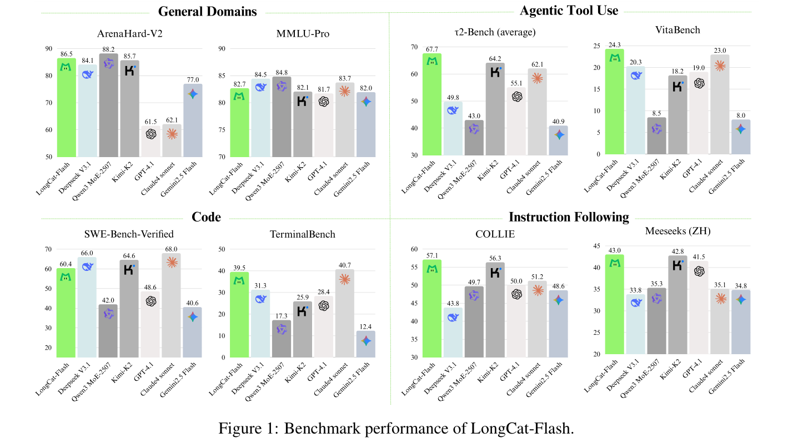
DeepSeek-V3 [DeepSeek-AI et al., 2025]、Qwen3 [Yang et al., 2025] 和 Kimi-K2 [Team et al., 2025] 等 LLM 的快速发展，证明了扩大模型规模和计算资源的有效性。尽管近期的一些进展引发了对规模扩展可能放缓的担忧，但我们认为，算法设计、底层系统优化和数据策略，对于进一步推进可扩展智能的前沿同样至关重要。这需要在模型架构和训练策略上进行创新，以提升规模扩展的成本效益，同时还需要系统性的数据策略，增强模型解决现实任务的能力。
在这项工作中，我们推出 LongCat-Flash：一个高效而强大的 MoE 语言模型，旨在沿着计算效率和 agent 能力这两个相互协同的方向推进语言模型的前沿。LongCat-Flash 在数万张加速卡上进行训练，将架构创新与精细的多阶段训练方法相结合，以构建可扩展且智能的模型。我们的贡献同时涵盖效率和 agent 智能：
总体而言，得益于可扩展架构设计、训练策略和基础设施工作的协同，LongCat-Flash 同时实现了高训练吞吐量和低推理延迟。尤其是，我们在 30 天内完成了 560B 模型在超过 20T token 上的预训练，时间可用率达到 98.48%，故障处理无需人工干预。推理时，大规模部署在 H800 上的效率超过每秒 100 个 token（TPS），每百万输出 token 的成本为 0.7 美元，相比规模相近的模型表现突出。
我们在多种基准上评测了 LongCat-Flash 的基础版本和指令微调版本，概览汇总于图 1。作为非思考型模型，LongCat-Flash 的性能可与 DeepSeek-V3.1 [DeepSeek-AI et al., 2025] 和 Kimi-K2 [Team et al., 2025] 等最先进的非思考型模型相媲美，同时使用更少的参数、提供更快的推理速度。具体来说，LongCat-Flash 在 ArenaHard-V2 上得分 86.5，在 TerminalBench 上得分 39.5，在 \(\tau ^{2}\)-Bench 上得分 67.7，展示了在通用领域、编程和 agent 工具使用方面的稳健能力。为了降低现有开源基准可能造成的污染，并提高评测可信度，
（本句接原文第 5 页。）
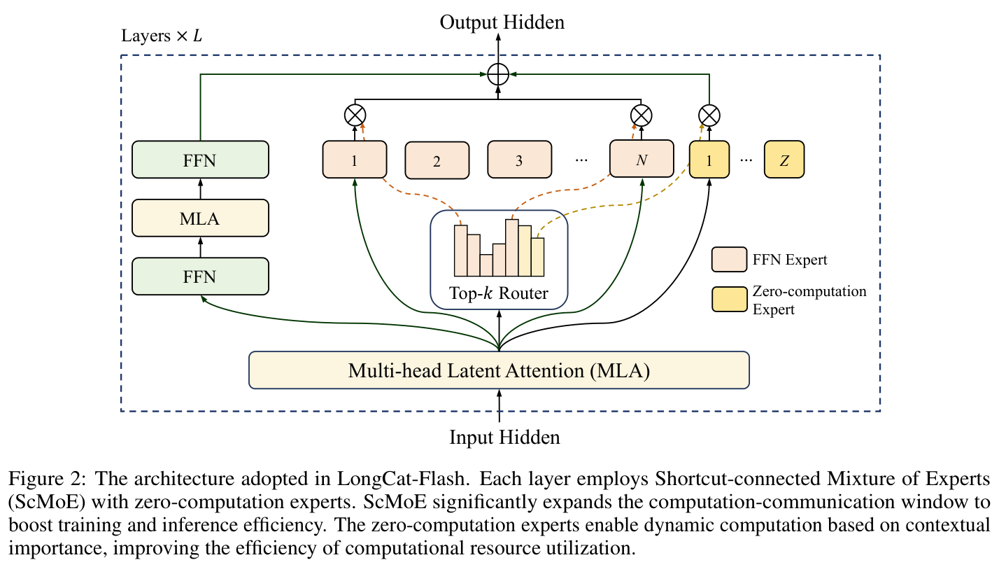
（接原文第 4 页。）
我们精心构建了两个新基准：Meeseeks [Wang et al., 2025a] 和 VitaBench。Meeseeks 通过迭代反馈框架模拟真实的人类与 LLM 交互，以评测多轮指令遵循能力；LongCat-Flash 在该基准上取得了与前沿 LLM 相当的得分。VitaBench 利用真实业务场景，评估模型处理复杂现实任务的熟练程度；LongCat-Flash 在这一基准上的表现优于其他 LLM。
在报告的其余部分，我们首先详细介绍 LongCat-Flash 的架构与创新。随后介绍预训练和后训练过程，包括训练策略、数据构建方法和评测结果。最后，我们讨论训练 LongCat-Flash 时面临的挑战及解决方案，以及利用其独特架构进行优化的推理和部署方法。
LongCat-Flash 采用新型 MoE 架构，包含两项关键创新（图 2）：（1）MoE 块纳入零计算专家 [Jin et al., 2024]，实现动态计算，让 token 根据其在上下文中的重要性消耗不同数量的计算资源。此外，通过自适应专家偏置调节平均计算负载。（2）每层集成两个 MLA 块 [Liu et al., 2024a] 和多个异构 FFN 块。我们采用一条从第一个 MLA 输出直接连接到 MoE 块的捷径连接 [Cai et al., 2024]。为进一步提升性能，我们通过方差对齐改进 MLA 和细粒度 FFN 专家。以下各小节将详细介绍这些组件。
下一 token 预测具有内在的计算异质性。准确预测困难 token 可能需要更多资源，而简单 token 只需要极少的计算。这种现象也得到了 speculative decoding 的实证支持：对于大多数简单 token，小型草稿模型能够可靠地预测大型模型的输出 [Leviathan et al., 2023]。
受此启发，LongCat-Flash 利用零计算专家 [Jin et al., 2024, Zeng et al., 2024]，为每个 token 激活可变数量的 FFN 专家，从而提出一种动态计算资源分配机制，使计算能够根据上下文重要性得到更合理的分配。具体而言，除 \(N\) 个标准 FFN 专家外，LongCat-Flash 还将 \(Z\) 个零计算专家加入专家池。零计算
（本句接原文第 6 页。）
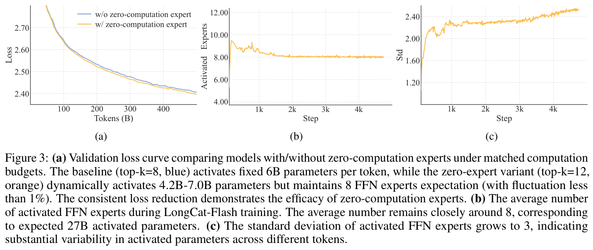
（接原文第 5 页。）
专家仅将输入 \(x_{t}\) 原样作为输出返回，因此不会引入额外计算成本。令 \(x_{t}\) 表示第 \(t\) 个 token 的 MoE 输入，LongCat-Flash 的 MoE 模块可表示为：
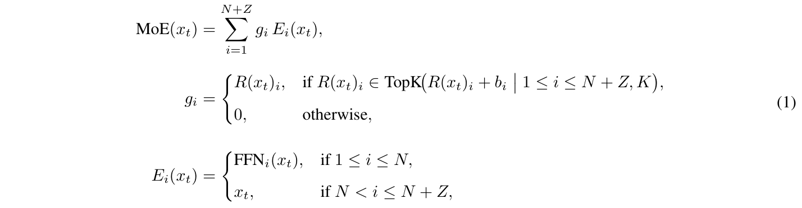
其中，\(R\) 表示 softmax 路由器，\(b_{i}\) 为第 \(i\) 个专家对应的专家偏置，\(K\) 表示每个 token 选择的专家数量。
路由器将每个 token 分配给 \(K\) 个专家，其中激活的 FFN 专家数量根据 token 的上下文重要性而变化。通过这种自适应分配机制，模型学会动态地向上下文重要性更高的 token 分配更多计算资源，从而在相同计算容量下取得更好的性能，如图 3a 所示。
为了促使模型学会上下文相关的计算分配，必须对零计算专家的平均选择比例进行精细控制。没有显式约束时，模型往往无法充分利用零计算专家，导致资源使用低效。
为此，我们改进了无辅助损失策略 [Wang et al., 2024a] 中的专家偏置机制，引入各专家专属的偏置项，按照近期专家利用情况动态调整路由得分，同时与语言模型（LM）的训练目标保持解耦。第 \(i\) 个专家对应的专家偏置 \(b_{i}\) 在每一步按以下计算出的增量更新：
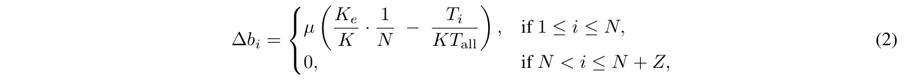
其中，\(\mu\) 表示偏置调整速率，\(T_{all}\) 表示一个全局 batch 的 token 数量，\(T_{i}\) 表示路由到第 \(i\) 个专家的 token 数量，\(K_{e}\) 表示期望激活的 FFN 专家数量，且小于 \(K\)。
所提出的更新规则采用控制理论中的 PID（比例—积分—微分）控制器 [Bennett, 1993]，确保第 \(i\) 个专家的 token 分配比例收敛到目标比例。与固定偏置
（本句接原文第 7 页。）
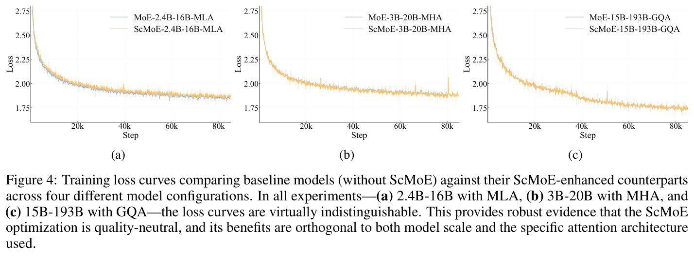
（接原文第 6 页。）
增量 [Wang et al., 2024a] 相比，这种机制在专家数量扩大时提高了 softmax 路由器概率分布的稳健性。值得注意的是，我们将零计算专家排除在偏置更新之外，因为其恒等映射性质只需要一个全局约束，而当所有 FFN 专家达到期望的 token 比例时，这一约束就会自动满足。实证表明，大 batch 和 \(\mu\) 的衰减调度可提高预算控制的稳定性，而 mini-batch 可能需要降低更新频率。
预训练期间，我们追踪了激活专家数量的平均值和标准差（图 3b、3c）。结果表明，在约 20B token 的调整之后，所有层的平均专家数量均收敛至期望值，波动小于 1%。不过，标准差始终维持在较高水平，说明模型为不同 token 分配的计算资源存在显著差异。
动态路由的详细统计和案例研究见附录 A.1。
高效的 MoE 训练需要 FFN 专家之间稳健的负载均衡。虽然式（2）在语料层面施加了均衡约束，我们仍引入设备级负载均衡损失 [DeepSeek-AI et al., 2025]，进一步防止 EP 组之间出现极端的序列级不均衡。我们做了必要的调整，以兼容零计算专家。具体而言，假设将全部 \(N\) 个 FFN 专家划分为 \(D\) 组，每组包含 \(G = N/D\) 个专家，则损失可表示为：
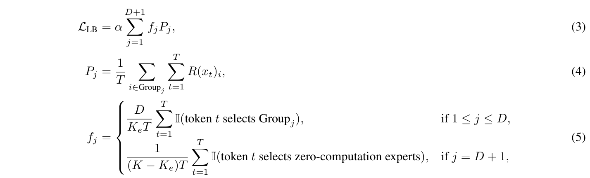
其中，\(\alpha\) 是均衡系数，\(T\) 是一个 micro-batch 的 token 数量，\(I\) 表示指示函数。在该损失中，我们把全部零计算专家划入一个额外的组，并对每组的频率进行平均。通过调整 \(f_{j}\) 的系数，我们确保损失收敛时，FFN 专家与零计算专家的比例趋近 \(K_{e}/(K - K_{e})\)。
我们的初始架构采用 MoE 块与稠密 FFN 块交错的拓扑结构。这一设计已通过广泛实证研究验证，其性能可与领先的共享专家
（本句接原文第 8 页。）
（接原文第 7 页。）
模型 [Rajbhandari et al., 2022, Liu et al., 2024a] 相当。然而，大规模 MoE 模型的效率在很大程度上受到通信开销限制。在常规执行范式中，EP 要求串行工作流程：集合通信操作必须先将 token 路由到指定专家，之后才能开始计算。这种通信延迟成为瓶颈，导致设备利用不足，并限制系统整体吞吐量。
共享专家架构试图通过将通信与单个专家的计算重叠来缓解这一问题，但其效率受限于该专家较小的计算窗口。我们采用捷径连接 MoE（ScMoE）架构 [Cai et al., 2024] 克服这一局限。ScMoE 引入跨层捷径连接，重新安排执行流水线。这一关键创新允许前一个块的稠密 FFN 与当前 MoE 层的分发／合并通信并行执行，从而产生比共享专家设计更大的重叠窗口。此外，以下关键发现验证了这一架构设计选择。
首先，ScMoE 结构不会损害模型质量。如图 4 所示，我们的架构与不使用 ScMoE 的基线，其训练损失曲线几乎相同，证实这种重排执行不会损害模型性能。在多种设置中都观察到了相同结果，包括采用 MLA 的 2.4B-16B MoE 模型、采用 MHA [Vaswani et al., 2017] 的 3B-20B 模型，以及采用 GQA [Ainslie et al., 2023] 的 15B-193B 模型。尤其是，这些发现表明 ScMoE 的稳定性和收益独立于 attention 机制的选择。
其次，ScMoE 架构在训练与推理中均带来显著的系统级效率提升。
对于大规模训练：扩大的重叠窗口允许前一个块的计算与 MoE 层的分发和合并通信阶段完全并行，这通过沿 token 维度将操作划分为细粒度分块来实现。
对于高效推理：ScMoE 支持单 batch 重叠流水线，与 DeepSeek-V3 等领先模型相比，将理论 TPOT 降低近 50%。此外，它允许不同通信模式并行执行：稠密 FFN 的节点内 TP 通信（通过 NVLink）可以与节点间 EP 通信（通过 RDMA）完全重叠，从而最大化整体网络利用率。
总而言之，ScMoE 在不牺牲模型质量的前提下显著提升性能。这些效率收益并非通过取舍实现，而是经过严格验证、对质量无损的架构创新的直接结果。
在小规模上表现出色的架构设计，在模型扩大后可能不再最优，反之亦然，这使初始设计选择变得不可靠。通过广泛实验与理论分析，我们发现特定模块中的方差不对齐，是造成这种差异的关键因素，它可能在规模扩展时导致不稳定与性能下降。为解决这一挑战，我们针对 MLA 和 MoE 块提出了方差对齐技术。
LongCat-Flash 采用改进的 MLA 机制 [Liu et al., 2024a]，加入尺度校正因子 \(\alpha _{q}\) 和 \(\alpha _{kv}\)，解决非对称低秩分解固有的方差失衡。包含这些校正因子的完整数学表达式如下：
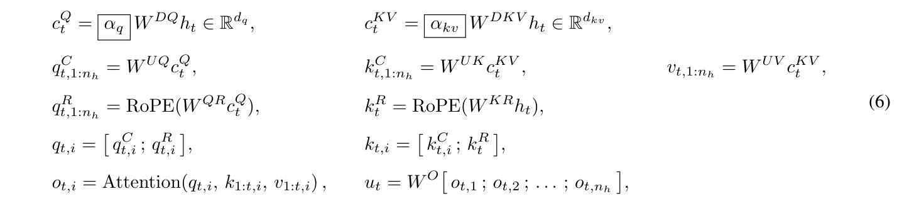
其中，\(h_{t} \in \mathbb{R} ^{d_{model}}\) 为第 \(t\) 个 token 的 attention 输入，\(n_{h}\) 为 attention 头数量。
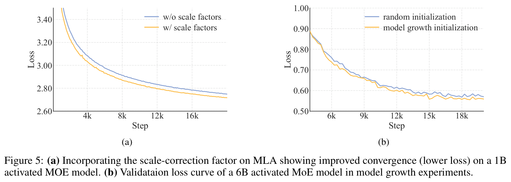
引入 \(\alpha _{q}\) 和 \(\alpha _{kv}\)，解决了查询／键向量各分量之间的根本性方差不匹配。在初始化时，它们的方差与其来源维度成正比：\(\sigma ^{2}(q^{C}_{t})\)、\(\sigma ^{2}(q^{R}_{t})\) ∝ \(d_{q}\)，而 \(\sigma ^{2}(k^{C}_{t})\) ∝ \(d_{kv}\)。相比之下，RoPE 键分量 \(k^{R}_{t}\) 的方差与完整模型维度成正比：\(\sigma ^{2}(k^{R}_{t})\) ∝ \(d_{model}\)。这种维度差异使得当 \(d_{q}\)、\(d_{kv}\) 和 \(d_{model}\) 变化时，初始化阶段的 attention 得分不稳定，导致模型扩展时性能下降且难以预测。
我们的解决方案是重新缩放低秩路径中的分量，使其最终方差与参考尺度对齐，并使用完整模型维度作为参考。为此，我们将缩放因子定义为：
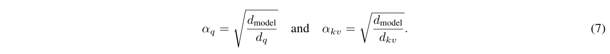
这种尺度不变校正抵消了方差不匹配，确保各分量适合进行 attention 计算。实验表明，该方法可提升模型性能，如图 5a 所示。
LongCat-Flash 采用 DeepSeek-MoE [Liu et al., 2024a] 的细粒度专家策略，将每个专家切分为 \(m\) 个更细粒度的专家，以增强组合灵活性和知识专门化。不过，我们观察到，这一设计的性能对其他架构选择（例如专家数量、top-k、\(m\)）较为敏感。为此，我们提出方差补偿机制，抵消专家切分导致的初始化方差降低。该机制对专家聚合输出施加缩放因子 \(\gamma\)，表达式为：
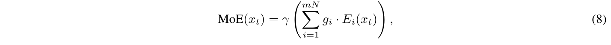
其中，\(g_{i}\) 是路由器在 mN 个细粒度专家上的输出，\(N\) 表示切分前的专家总数。
式（8）中的缩放因子 \(\gamma\)，通过量化方差降低的两个主要来源推导得到：
为了保持 MoE 层初始化时的输出方差（与切分前的基线一致），\(\gamma\) 必须补偿这两种效应。因此，组合后的方差补偿因子为 \(\gamma = \sqrt{m \cdot m} = m\)。
tokenizer。LongCat-Flash 使用 BPE[Shibata et al., 1999, Sennrich et al., 2015] 进行分词。我们的 tokenizer 在涵盖网页、书籍、源代码等内容的综合多语言语料上训练，以确保稳健的跨领域表现。在继承 GPT-4 预分词框架的同时，我们做了以下修改：（1）增强 CJK 字符切分，以更好地处理中文文本；（2）对数字进行独立分词，以增强数学能力。词表大小优化为 131,072 个 token，在计算效率与语言覆盖范围之间取得有效平衡。
MTP。为提升推理效率，我们将 MTP[Gloeckle et al., 2024, DeepSeek-AI et al., 2025] 纳入辅助训练目标。为实现最优推理性能，我们采用单个稠密层作为 MTP 头，而非 MoE 层。实证观察表明 MTP 损失收敛迅速，因此我们策略性地在训练流程中段引入 MTP 训练，以平衡模型性能与预测准确性。评测中，MTP 头的接受率超过 90%（表 5）。
模型配置。LongCat-Flash 包含 28 层（不含 MTP 层），隐藏状态维度为 6144。每个 MLA 块使用 64 个 attention 头，每个头的维度为 128，以平衡性能与效率。沿用 DeepSeek-V3 [Liu et al., 2024a]，我们将 KV 压缩维度设为 512，查询压缩维度设为 1536。稠密路径中的 FFN 使用 12288 个中间维度，每个 FFN 专家则使用 2048 个维度。MLA 块和 FFN 块中的缩放因子遵循第 2.3.1 节的方法。每层包含 512 个 FFN 专家和 256 个零计算专家，每个 token 恰好激活 12 个专家（从两种类型中选择）。LongCat-Flash 总参数量为 560B，根据上下文为每个 token 激活 18.6B 至 31.3B 参数，平均激活参数量约为 27B。
LongCat-Flash 的预训练遵循三阶段课程：（1）以 8192 的序列长度，在约 20 万亿 token 上训练模型，建立稳健的基础模型。（2）使用万亿级数据进一步增强推理和编程能力。（3）通过长上下文语料训练，将上下文长度扩展至 128k。每个阶段都采用针对性的数据策略，并配合严格的数据去污染程序，防止测试集泄漏。
为优化可扩展性，我们引入超参数迁移和模型增长策略，使模型性能随规模扩大而显著提升。考虑到大规模训练固有的不稳定性挑战，我们识别并实施了多种有效技术，以提高训练稳定性。
LongCat-Flash 采用基于宽度缩放的超参数迁移策略 [Everett et al., 2024]，以高效训练大规模模型。该方法包含：（1）在较小的代理模型上确定最优超参数；（2）通过有理论依据的缩放规则，将这些配置迁移到目标模型。
迁移机制以宽度缩放因子 \(s = n_{target}/n_{proxy}\) 为核心，其中 \(n\) 为模型隐藏维度。我们具体采用标准参数化的“Adam LR Full Align”规则。这些规则规定了如何针对目标架构调整代理模型的最优初始化方差（\(\sigma ^{2}\)）和学习率（\(\eta\)）。实际迁移规则汇总于表 1。
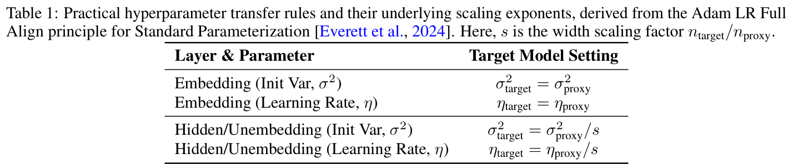
按照这一方法，我们的训练包含以下步骤：
我们进行了全面实验，验证这一方法的有效性。结果表明，该方法显著降低了确定大型模型训练最优超参数（初始化方差和学习率）时的计算成本，同时建立了一个稳健且有理论基础的模型规模扩展框架。
LongCat-Flash 采用模型增长作为初始化策略，从一个已在数百亿 token 上预训练的半规模模型开始。在现有模型增长方法 [Chen et al., 2015, Du et al., 2024, Wang et al., 2023a, Shen et al., 2022, Wang et al., 2023b, Gong et al., 2019] 中，我们采用层堆叠技术 [Du et al., 2024, Kim et al., 2023] 扩大参数量并提升性能。暂时忽略 embedding 和反 embedding 过程，整个流程可表示为：
其中，\(l_{i}\) 表示模型第 \(i\) 层的变换，\(r\) 表示扩展倍率，\(L_{small}\) 表示小模型从 token embedding 到最终隐藏状态的变换，\(L_{target}\) 则表示将小模型堆叠 \(r\) 次后构建的目标大型模型变换。我们的架构使用 \(r = 2\)。
通过广泛实验，我们始终观察到，经模型增长初始化的模型呈现一种特征性的损失轨迹：先上升，随后加速收敛，最终优于随机初始化的基线。图 5b 展示了激活参数量为 6B 的模型实验中的一个代表性案例，说明模型增长初始化的优势。
我们推测，这种改进来自两个相互协同的因素：（1）较小模型更快的收敛速度，可能为扩大规模后的训练提供更高质量的参数初始化；（2）增长操作可能对参数坍缩起到隐式正则化作用。实验还表明，过度优化前代模型可能对目标模型的 token 效率产生负面影响，说明必须审慎选择增长时机。
初始化 LongCat-Flash 时，我们首先使用随机初始化，在最初的数据片段上训练一个与目标模型架构相同的 14 层模型。随后将训练后的模型堆叠，形成 28 层 checkpoint，并保留前代模型的全部训练状态，包括样本计数器和学习率调度。
我们从路由器稳定性、激活稳定性和优化器稳定性三个角度，增强 LongCat-Flash 的训练稳定性。
路由器稳定性。MoE 模型训练的一项根本挑战是路由器稳定性，其根源是两种相互竞争的 gradient 之间的张力：
当 LB gradient 占据主导地位时，所有专家对应的路由器参数会趋于相似，导致无论输入 token 是什么，路由决策都趋于均匀。这使条件计算的优势失效，并严重损害模型性能。
为了诊断和控制这一行为，我们提出包含两项关键指标的监控框架：
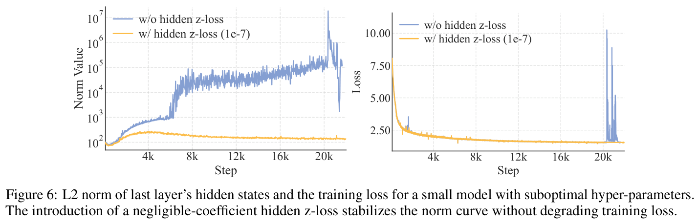
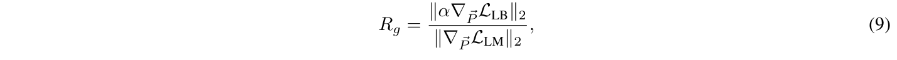
其中，\(L_{LB}\) 为计算时未包含系数 \(\alpha\) 的负载均衡损失。
在这一框架指导下，我们建立了设置超参数 \(\alpha\) 的实用准则。原则是确保负载均衡项发挥正则化作用，而不会压过 LM 损失。因此，我们建议选择能使 \(R_{g}\) 低于较小阈值（例如 \(R_{g} < 0.1\)）的系数。
通过 hidden \(z\)-loss 提高激活稳定性。受路由器 \(z\)-loss [Zoph et al., 2022] 启发，我们设计 hidden \(z\)-loss，以规避 LLM 训练中普遍出现的巨大激活值 [Sun et al., 2024]。通过实证观察，我们发现这种巨大激活值与训练中的严重 loss spike 相关，而后者又与优化不稳定及潜在性能下降有关。hidden \(z\)-loss 主要用于抑制幅值极大的元素：
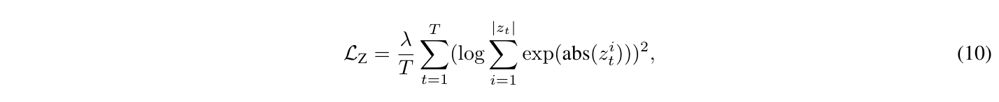
其中，\(\lambda\) 为该损失的权重系数，\(z_{t}\) 是第 \(t\) 个 token 的最后一层输出（最终层归一化之前），\(|z_{t}|\) 为隐藏状态大小，abs(∗) 表示绝对值函数。如图 6 所示，我们发现极小的损失系数就能显著抑制巨大激活值现象，同时不损害训练损失，从而降低 BF16 训练中数值错误的风险。
Adam 的 epsilon 实用配置。随着模型规模增大，Adam 优化器中的 epsilon（\(\epsilon\)）参数，过去通常被视为用于数值稳定性的次要常数，如今成为关键超参数。OLMo et al. [2024] 表明，将其设为 1e-8，比默认的 1e-5 能取得更好的结果。这种敏感性的提升主要源于两个因素：（1）大规模模型通常使用更小的参数初始化值；（2）训练中使用显著更大的 batch。使用默认 \(\epsilon\) 值时，该参数的量级可能与 gradient 二阶矩的典型尺度相当，甚至更大，从而扰乱优化器的自适应机制。
如图 7 所示，我们通过追踪 gradient 均方根（RMS）范数进行实证分析，得出两个关键发现：（1）阈值效应：当 \(\epsilon\) 接近观测到的 gradient RMS 范数时，性能会明显下降；（2）低值区稳定性：一旦 \(\epsilon\) 降至这一关键阈值以下，进一步减小 \(\epsilon\) 对模型性能的影响可以忽略。因此，我们建议将 \(\epsilon\) 设为很小的值（比预期 gradient RMS 范数小几个数量级）。LongCat-Flash 采用 \(\epsilon = 1e\)-16，这一配置在确保数值稳定性的同时，保留了优化器的自适应特性。
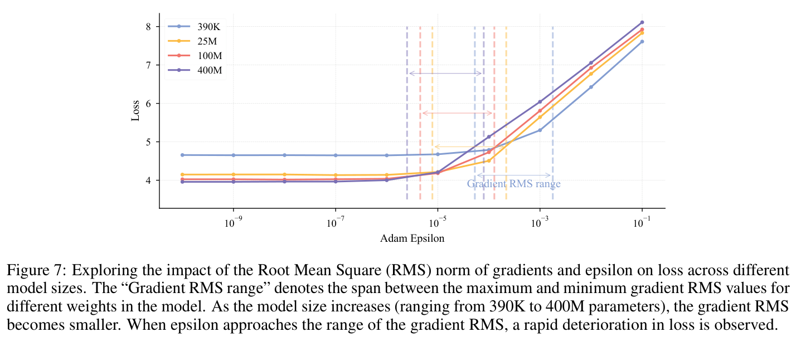
我们首先开展通用预训练阶段，以保证模型的整体能力。为确保数据质量和多样性，我们设计了多阶段流程。主要阶段包括：
内容提取。我们对通用网页内容使用定制版 trafilatura [Barbaresi, 2021]，并为 STEM 材料采用专门的处理流程，以正确解析公式、代码和表格等复杂元素。
质量过滤。采用两步过滤方法：先由分类器移除明显低质量的文档，再根据流畅度、内容完整性等指标进行更细粒度的筛选。
去重。我们使用高效的 MinHash 实现进行大规模去重，并辅以识别和处理重复网页模板的策略，实现更准确的文档级去重。
最终数据混合过程采用两阶段安排，逐步提高高质量推理数据（如 STEM 和代码）的比例。
为了进一步增强模型的推理和编程能力，并建立一个为后续后训练保留充分潜力的稳健基础模型，我们开展了中期训练阶段，使用结合预训练数据检索与数据合成所生成的高质量相关数据。
我们引入系统性合成数据工作流程，通过三项关键机制优化数据质量和多样性：（1）知识图谱遍历与节点组合，确保概念复杂度和领域覆盖；（2）多阶段迭代改进，逐步提高难度及 CoT 推理质量；（3）双模态生成与验证（文本与计算），保证数学准确性和解答有效性。我们结合基于规则与基于模型的过滤器，进行细致的质量控制，最终数据集包含数千亿 token。
我们实施两阶段上下文长度扩展策略，以满足后续长上下文推理和 agent 训练的要求。第一阶段使用 80B 训练 token，将上下文窗口从 8k 扩展到 32k token，并将 RoPE [Su et al., 2024] 的基频从 1,000,000 提高到 5,000,000。第二阶段再使用 20B token，将上下文进一步扩展至 128k token，并将基频提高到 10,000,000。
训练语料以自然存在的长文本数据为基础，例如高质量书籍和小说。此外，我们开发了系统性方法来组织仓库级源代码，以提高模型的长上下文能力。我们仔细选择高质量仓库，并采用多阶段过滤流程，移除非文本内容、构建产物和自动生成代码，最终获得一个经过精选、包含 20B token 的长上下文预训练数据集。
为了在长度扩展期间保持模型通用能力稳定，我们采用与主要预训练阶段相同的数据混合策略，并在该混合中额外加入 25% 的长上下文数据，以增强模型的长上下文性能。
我们对全部训练数据进行严格去污染，防止常用基准的测试集数据泄漏。对于网页和代码数据，我们移除与预定义测试集存在任意 13-gram 重叠的文档。对于合成数据和问答对，我们采用更严格的策略，使用 BGE-m3 [Chen et al., 2024] embedding 计算语义相似度。满足以下任一条件的文档会被丢弃：（1）与任一测试案例的语义相似度得分 > 0.9；（2）存在词汇重叠（通过稀疏 embedding 衡量），且相似度得分位于 0.7–0.9。
本节全面评测 LongCat-Flash 基础模型，包括评测方法和结果。
模型评测涵盖四项核心能力：通用任务、通用推理、数学推理和编程。所用基准包括：
我们将 LongCat-Flash 基础模型与最先进的开源 MoE 基础模型进行比较，包括 DeepSeek-V3.1 Base [DeepSeek-AI et al., 2025]、Llama-4-Maverick Base [Meta AI, 2025] 和 Kimi-K2 Base [MoonshotAI, 2025]。
为确保公平，所有模型均在相同流程和配置下评测。对于少数无法复现的结果，我们直接采用公开报告中的指标，并在表 2 中明确标注。评测设置如下：
表 2 展示了多种基准上的评测结果。尽管激活参数量和总参数量较小，LongCat-Flash Base 模型仍取得了与最先进基础模型相当的性能。虽然 Llama-4-Maverick 的激活参数和总参数更少，LongCat-Flash Base 在几乎所有基准上都超过了它。
比较分析表明，尽管参数更少，LongCat-Flash Base 在所有领域的性能仍可与 DeepSeek-V3.1 Base 相当。两者在通用任务上表现相近，但 LongCat-Flash Base 在包含高难度问题的 MMLU-Pro 基准上展现出明显优势。对于推理任务，LongCat-Flash Base 的平均得分更高。在数学和编程任务中，它在大多数基准上优于 DeepSeek-V3.1 Base，仅在 CRUXEval 和 MultiPL-E 上观察到较小的性能差距。与 Kimi K2 Base 相比，LongCat-Flash Base 在通用任务上的性能略低，但在推理、数学和编程任务上达到相当或更优的水平。
这些结果共同突出了 LongCat-Flash Base 的参数效率：在大多数评测基准上，它能提供与更大模型相当或更优的性能。
译注：以上为原文叙述。表 2 中部分数学、编程指标与该段概括并不完全一致；译文与表格均按原文保留。
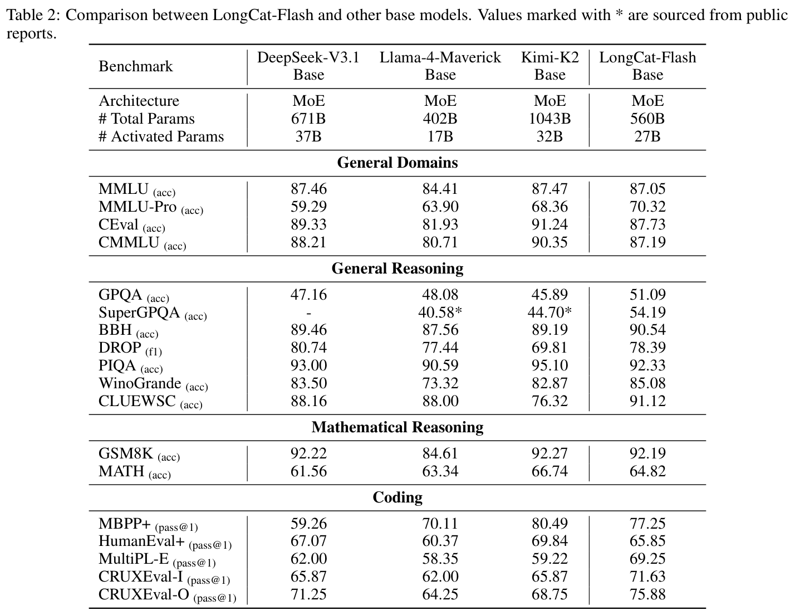
我们采用常规的多阶段后训练框架，增强基础模型在多种领域的性能，从复杂推理、编程和 agent 工具使用任务，到通用能力。在这一过程中，我们观察到，高质量问题集供应有限，是所有领域的一项重大瓶颈。以下各节介绍后训练方法所得的关键见解，按三个不同阶段组织：（1）推理与编程；（2）agent 工具使用；（3）通用能力。
数学。为了生成高质量且新颖的问题，我们采用 persona [Ge et al., 2024]、self-instruct [Wang et al., 2022] 范式。这一过程由覆盖初级至高级主题的全面数学框架指导。我们利用多样的数学相关“专家”人物画像提问，引导 LLM 合成覆盖代表性不足学科的查询。每个查询的结构都旨在诱发 CoT 推理，促使生成答案逐步解决问题。人物画像整理和答案验证的细节如下：
编程。我们从多个来源收集多样的编程查询，包括公开数据集、从 GitHub 代码片段 [Wei et al., 2024] 和编程论坛生成的查询，以及使用 Code Evol-Instruct 方法 [Luo et al., 2024] 演化得到的查询。数据分布按主题多样性和难度进行平衡。具体来说，我们训练一个模型，挑选清晰、一致、正确且具有充分解释细节的查询，并实施过滤流程，移除包含乱码、重复模式或逻辑错误的回答。对于软件工程任务，我们整理并验证了数万个包含测试用例的 Docker 镜像。每个镜像用于验证模型生成的代码能否解决对应仓库中的具体问题。我们开发了一个基于 agent 的系统，利用多种工具自主分析代码结构、定位相关文件、修复错误并实现新功能。这一过程产生了数千条通过全部测试用例的成功轨迹，从而增强模型自主解决现实软件工程问题的能力。
逻辑推理。我们构建了覆盖演绎、假设和归纳推理的逻辑推理数据集，包含 LogicPro [Jiang et al., 2025]、PODA [Wang et al., 2025b] 和 Zebra 风格逻辑谜题等任务。为控制难度，我们先使用 Pass@k 指标进行初步平衡，再过滤掉先进思考型模型也未能解决的棘手问题。我们还将选择题转为填空题形式，以减轻随机猜测的影响。回答评估聚焦四个关键方面：（1）最终答案的正确性；（2）推理的完整性与清晰度；（3）避免过度重复；（4）语言使用的一致性。
我们将 agent 任务定义为通过系统性的环境交互解决复杂问题。在这一范式中，模型必须反复分析现有信息，并判断何时需要与环境交互。具体而言，在 agent 工具使用框架内，环境由具有不同特征的用户和工具构成。用户是一个自主提供信息的实体，没有上下游依赖，但不愿被打扰，也不会主动披露信息。因此，模型必须尽量减少向用户提问，并在确有交互必要时，运用策略性提问技巧获取尽可能精确的信息。工具可以被大量、高频调用，但具有错综复杂的相互依赖。从这一视角出发，排除高级编程能力或数学计算等领域专门知识，我们将任务难度增加归因于三个因素：
基于这些见解，我们构建多 agent 数据合成框架，系统性地处理 agent 训练的三个关键复杂度维度，从而生成高质量、高难度任务：（1）工具集复杂度，
（本句接原文第 17 页。）
（接原文第 16 页。）
（2）信息处理复杂度，以及（3）用户交互复杂度。该框架包含以下专门 agent：
利用这些高质量、高难度任务，我们进一步严格筛选回答，构建数量适当的冷启动训练集，展示多样模式并保留较强的探索能力。我们还从生成任务中精心选择一个子集，用于进一步后训练，确保每个任务都值得进行大量探索。
指令遵循。我们整理了单轮与多轮指令遵循数据集，包含不同复杂度和数量的约束。对于多约束查询，我们采用 Ye et al. [2025] 的见解，过滤语义质量低或约束相互冲突的查询。对于不同查询类型，我们使用可验证规则、基于模型的验证和定制策略，确保回答满足全部约束。此外，我们汇编了针对高难度任务的批评数据集，增强模型的批判性思维能力 [Wang et al., 2025c]。我们观察到，有些约束类型本身就难以遵循，使直接生成有效查询—答案对的方式不可靠。为此，我们提出反向提示生成策略：根据预先定义、确保满足约束的答案生成查询。
长上下文。为了使模型能够识别和分析复杂、冗长上下文中的相关信息，我们开发三类长序列数据集：阅读理解、基于表格的问答，以及定制任务。为了促进模型学习长序列中的重要信息，我们聚合主题相关的上下文片段来构建数据。我们有针对性地增强模型的多跳推理、多轮对话和复杂计算能力。为了减轻上下文不完整时的幻觉，我们优化模型的拒答能力，提升其对知识边界和局限的认识。
安全性。基于 Mu et al. [2024] 的框架，并与内部内容准则对齐，我们制定了内容安全策略，将查询划分为 40 多种不同安全类别，涉及五种回答类型：遵从、附带指导的遵从、软拒绝、附带指导的软拒绝，以及硬拒绝。明确的标准确保各回答类型的回答一致且符合安全标准。这一系统作为具备上下文感知能力的数据合成器，分两个阶段运行：（1）查询分类：对来自多样来源的查询（开放领域语料、内部业务风险报告、政府问答和 LLM 合成的对抗性红队内容）进行自动标注，并由人工验证，将其划入安全类别。（2）回答映射与优化：将分类后的查询映射到回答类型，生成优化后的类型专属回答，经人工评估后用作训练目标。
我们对后训练后的 LongCat-Flash 进行全面而严格的评测。具体而言，从通用领域、指令遵循、数学推理、通用推理，以及编程与 agent 任务等多个维度评估其能力。
评测采用以下基准：
我们还评估 LongCat-Flash 的安全性能。具体而言，评测以下四种主要风险类别：
在每个类别中，我们构建足够数量的私有测试查询，再进行全面人工审核，以确保分类准确、质量可靠。
我们将 LongCat-Flash 的对话版本与几种同期非思考型对话模型进行比较，包括 DeepSeek-V3.1 [DeepSeek-AI et al., 2025]、Qwen3-235B-A22B（2507 版本）[Yang et al., 2025]、Kimi-K2 [MoonshotAI, 2025]、GPT-4.1 [OpenAI, 2025b]、Claude4-Sonnet [Anthropic, 2025] 和 Gemini2.5-Flash [Comanici et al., 2025]。闭源模型通过官方 API 评测。对于同时支持思考和非思考模式的模型（Qwen3-235B-A22B、Gemini2.5-Flash 和 Claude4-Sonnet），我们明确配置为非思考模式，以保证比较公平。
对于每类基准，我们采用以下专门指标和设置：
如表 3 所详述，全面评测表明，LongCat-Flash 是一个强大且多用途的模型。它在不同领域持续展现领先性能，在大量高难度任务上，经常以相对更少的激活参数超过同期模型。下面从不同维度详细分析其出色能力。
通用领域。在通用领域知识方面，LongCat-Flash 表现强劲且均衡。它在 ArenaHard-V2 上取得 86.50 的优秀得分，在全部受评模型中排名第二，展现了在高难度正面对比中的稳健能力。在基础基准上，它仍具有很强竞争力，MMLU 得分为 89.71，CEval 得分为 90.44。这些结果可与领先模型相当，而且使用的参数少于 DeepSeek-V3.1 和 Kimi-K2 等竞争模型，显示出较高效率。
指令遵循。LongCat-Flash 展现了最先进的指令遵循能力。它在 IFEval 上取得最高分 89.65，超过全部其他模型，证明其遵循复杂、细致指令的可靠性更高。此外，它在 COLLIE（57.10）和 Meeseeks-zh（43.03）上也取得最佳得分，凸显其对中英文多样且有挑战性的指令集的出色掌握。
数学推理。在数学推理方面，LongCat-Flash 展现了强大而先进的能力。其 MATH500 得分（96.40）已经很有竞争力，而在更复杂的竞赛级基准上，优势尤其明显。它在 AIME25（61.25）和 BeyondAIME（43.00）上取得优秀的一流水平结果，跻身这些高难度领域表现最好的模型之列。这体现了其进行复杂、多步骤逻辑推导和问题求解的先进能力。
通用推理。LongCat-Flash 在通用推理任务上也表现扎实。它在结构化逻辑推导方面尤其强，在 ZebraLogic 上得分 89.30，位居顶尖竞争模型之列。在阅读理解基准 DROP 上也取得具有竞争力的 79.06 分。相比之下，GPQA-diamond（73.23）和 GraphWalks（51.05）的结果表明仍有进一步提升空间，尤其需要增强其在极长上下文中分析结构化数据的能力。
编程。LongCat-Flash 在编程领域展现出有潜力且有能力的表现。最突出的是 TerminalBench，得分 39.51，排名第二，证明其擅长实践性的 agent 命令行任务。它在 SWE-Bench-Verified 上得分 60.4，也具有竞争力。在 Humaneval+ 和 MBPP+ 等基础代码生成任务上表现扎实，不过仍有进一步优化空间，以追上领先模型。
Agent 工具使用。LongCat-Flash 在 agent 工具使用领域具有明显优势，在 \(\tau ^{2}\)-Bench 上显著超过其他模型，即使与参数更多的模型相比也是如此。在高度复杂的场景中，它在 VitaBench 上取得最高分 24.30，展现了处理复杂场景的强大能力。
2 https://github.com/bigcode-project/bigcode-evaluation-harness
3 https://github.com/R2E-Gym/R2E-Gym
4 https://github.com/All-Hands-AI/OpenHands
安全性。总体而言，LongCat-Flash 在识别和缓解风险方面表现出色，与其他模型相比，尤其在“有害”和“犯罪”领域表现突出。
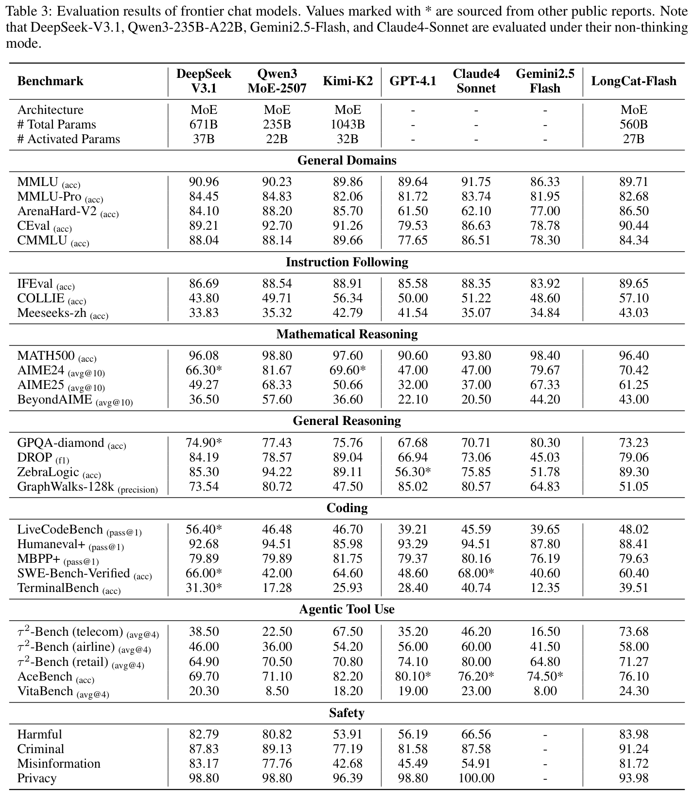
我们训练基础设施的核心设计原则是在保证精度的前提下实现可扩展性。我们开发了系统性的算子精度验证方法，并将在线静默数据损坏（SDC）检测 embedding 空闲计算阶段，以最小化数值错误。为了保证可复现性，并确保小规模
（本句接原文第 21 页。）
（接原文第 20 页。）
实验与全规模训练的结果一致，我们对全部计算和通信算子强制实施确定性。这使得任何训练步骤在多次重新运行时，损失值都能按位一致。
在保证正确性的基础上，我们专注于提升训练效率。墙钟时间对于快速算法迭代至关重要，但单张加速卡的能力有限。因此，我们将训练扩展到数万张加速卡，面对可扩展性与稳定性方面的挑战。通过模型与系统协同设计、多维并行，以及全自动故障检测和恢复，我们实现了近线性扩展与 98.48% 的可用率，在 30 天内完成训练。
ULP 评估。浮点误差受多种因素影响，即使是同一厂商不同代的加速卡也会有所不同。为了量化并减轻这些误差，我们采用 ULP（末位单位）作为指标，以 ULP 误差衡量加速卡 BF16 结果相对于 CPU FP32 真值的偏差。ULP 误差为零表示完全准确，数值越大则意味着精度越差。我们收集了训练中使用的全部算子类型和形状，并比较其 ULP 误差。表 4 展示了两种方案的 GEMM ULP 误差。
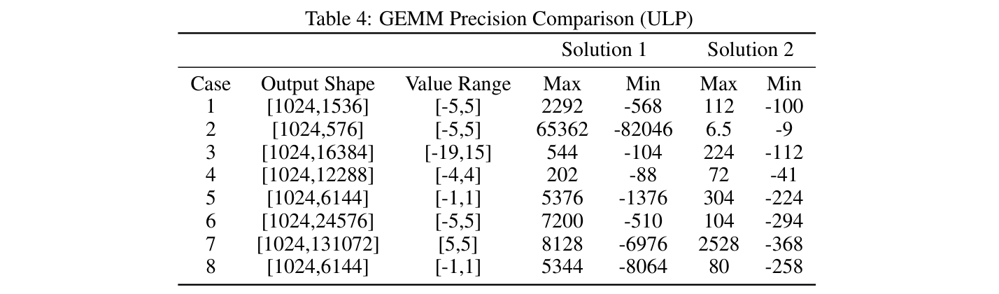
SDC 检测机制。在大规模训练中，SDC 故障通常不可避免，它会在没有系统警告的情况下改变数据，严重损害模型性能。为此，我们实现了高效的片上原位算子重计算机制。具体而言，我们发现 FlashAttention Gradients（FAG）的反向计算对 SDC 最为敏感，因为它同时混合张量计算和向量计算。重计算结果之间的位级差异表明可能存在 SDC 风险。检测计算在计算流中编排，重计算间隔可手动调整，从而在检测覆盖范围与计算成本之间灵活权衡。
值得注意的是，算子精度控制是确保模型准确性的必要条件，却不是充分条件。采用不同算子实现的实验，训练损失差异可能仅为 1e-3～1e-4，但基准表现的差异却超过 5 个百分点。如何以有成本效益的方式评估算子精度误差对模型性能的影响，仍是一项开放挑战。
确定性是计算正确性的金标准，它消除了浮点误差这一实验变量。然而，实现确定性往往会带来显著的性能开销。我们通过重新设计内核解决这一问题，在 LongCat-Flash 的整个训练过程中保持计算与通信的确定性。
确定性 FAG。默认的 FAG 实现是非确定性的，因为 dQ、dK 和 dV 沿不同维度归约，而原子加法无法保证顺序。我们开发了高效的确定性 FAG 内核，使用有限的额外工作空间，按确定顺序累加分块。结合双缓冲流水线、经过调优的分块调度和负载均衡等协同优化，实现的性能达到原始确定性版本的 1.6 倍、非确定性版本的 0.95 倍，在确定性与效率之间取得平衡。
确定性 ScatterAdd。反向传播中的 ScatterAdd 对 gradient 聚合至关重要，但存在输入输出操作数数量不匹配的问题。默认实现强制在单个计算单元中顺序执行，最多造成 50 倍的减速。我们提出分层归约算法，在全部可用处理器上并行聚合 gradient，性能达到与非确定性版本相当的水平。
优化的 Grouped GEMM。Grouped GEMM 计算量大，但与稠密 GEMM 相比计算密度较低，因此其性能至关重要。我们通过以下方式优化：（1）双缓冲流水线，使计算、内存 I/O 和收尾处理重叠；（2）对角分块，减轻 L2 cache 冲突；（3）通过限制计算单元数量控制 HBM 带宽，使 Grouped GEMM 与分发／合并通信重叠。这些优化相比默认版本带来 5%–45% 的加速。
融合 GemmAdd。gradient 累加期间，dw 计算受到带宽瓶颈限制。我们将 FP32 加法融合到 GEMM 收尾阶段，避免中间结果写回，并将加法隐藏在分块 GEMM 流水线中。这显著降低了延迟，并消除了转换 BF16 数据写入 HBM 所造成的精度损失，在融合 GroupedGemmAdd 基准上达到 3.12 至 3.86 倍的加速。
此外，我们重新实现了受 I/O 限制的内核（例如 MoE 层的 permute/unpermute），集成 token 丢弃和零计算专家处理等功能，同时确保确定性与性能。
训练架构以 EP 组为中心，每组包含 32 张加速卡。在一个 EP 组内，attention 层采用 CP（\(CP = 8\)）而非 TP，以最小化通信开销；FFN 层使用 EP 划分，不使用 TP。多个 EP 组沿 PP 和 DP 维度扩展。
采用 EP 可以减少包括权重和优化器状态在内的静态内存使用。然而，EP 本身会引入昂贵的分发和合并通信操作。为缓解这一问题，LongCat-Flash 采用 ScMoE 结构，使分发／合并通信能够与单个 batch 中的更多计算重叠。此外，MoE 层沿 token 维度划分为两个分块。这些子块实现两个目标：（1）与稠密 FFN 计算重叠；（2）彼此重叠（见图 8）。
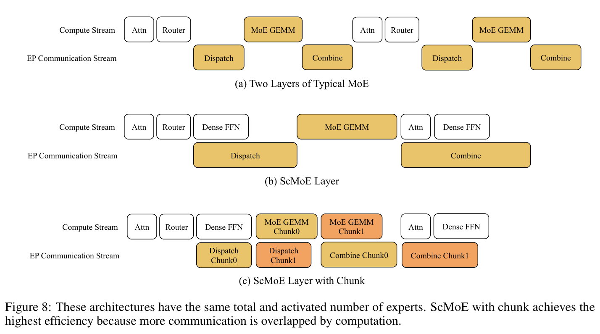
分发／合并通信有两种优化策略：（1）节点内和节点间采用流水线的 all-gather/reduce-scatter 内核；（2）优化的 all-to-all 内核。原生 all-to-all 将本地数据量扩大 top-k 倍，增加了每张加速卡 200Gb/s RDMA 网络上的流量。此外，由于拥塞控制不足，all-to-all 性能不稳定。我们选择具有确定性的流水线 all-gather/reduce-scatter 作为主要方案；采用 ScMoE 架构后，未重叠的分发／合并通信所占时间比例从 25.3% 降至 8.4%。
现有流水线策略（例如 1F1B、interleaved-1F1B、Zero-bubble [Qi and Others, 2023]）存在各流水线阶段内存使用不均衡的问题。为此，我们采用 V-ZB 算法 [Qi et al., 2024]，它可以均衡
（本句接原文第 23 页。）
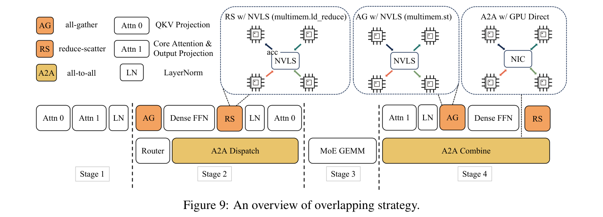
（接原文第 22 页。）
全部阶段的内存使用，并在 LongCat-Flash 训练中将峰值内存降低到 60GB 以下。此外，我们启用 zero bubble 的后验证策略，实现理论上的零气泡。一项关键改进是，在优化器状态回滚时，用上一步的备份数据代替逆运算，从而保持数值按位一致。
可靠性通过对最终训练轨迹作出贡献的时间比例（可用率）衡量，其中不可用时间包含故障恢复，以及最后一个 checkpoint 到故障发生之间浪费的时间。异步 checkpoint 保存将训练停顿降低到 2～4 秒，支持更高的保存频率，并最小化故障造成的损失。结合在线关键日志过滤、优化的初始化和全自动化，恢复时间缩短至 10 分钟以内。这些机制实现了 98.48% 的可用率，全部 20 次故障都自动处理，无需人工干预。
可观测性将细粒度和粗粒度性能分析与指标平台相结合。细粒度 PyTorch profiler 时间线支持具备并行感知能力的分布式联合分析，以识别 PP“气泡”和 rank 间通信等待。粗粒度监控增加了低开销的运行时慢节点分析。指标平台追踪损失、权重、gradient 和激活值，以快速评估模型状态。
LongCat-Flash 采用模型与系统协同设计，这对其高吞吐量和低延迟作出了显著贡献。本节重点介绍我们一个部署集群中实施的推理优化，展示如何在提高系统吞吐量的同时，显著降低延迟，在 H800 上达到 100 TPS。我们首先介绍与模型架构协同设计的并行推理架构。随后介绍量化、自定义内核等优化方法。最后给出部署策略和性能结果。
要实现高效推理系统，必须解决两项关键挑战：（1）计算与通信编排；（2）KV cache 的 I/O 与存储。对于第一项挑战，现有方法通常利用三个常规粒度上的并行：NanoFlow [Zhu et al., 2025] 等算子级重叠、以 EPS-MoE [Qian et al., 2025] 为代表的专家级重叠，以及 DeepSeek-V3 TBO（双 batch 重叠）[Team, 2025b] 展示的层级重叠。LongCat-Flash 的 ScMoE 架构引入第四个维度——模块级重叠；为此，我们设计了 SBO（单 batch 重叠）调度策略，同时优化延迟和吞吐量。对于第二项挑战，即 KV cache I/O 与存储，LongCat-Flash 通过 attention 机制和 MTP 结构的架构创新，降低实际 I/O 开销。
LongCat-Flash 的结构天然具有计算与通信重叠特性，这是在维持生成吞吐量的同时降低延迟的关键。我们精心设计了单 batch 重叠（SBO），这是一种四阶段流水线执行方式，通过模块级重叠充分释放 LongCat-Flash 的潜力，如图 9 所示。SBO 与 TBO 的区别在于，它在单个 batch 内隐藏通信开销。在 SBO 中，阶段 1 必须独立执行，因为 MLA 输出是后续阶段的输入。阶段 2 将 all-to-all 分发与 Dense FFN 和 Attn 0（QKV 投影）重叠。这一重叠至关重要，因为通信开销过大，促使我们拆分 attention 过程。阶段 3 独立执行 MoE GEMM，其延迟可从宽 EP 部署策略中受益。阶段 4 将 Attn 1（核心 attention 与输出投影）和 Dense FFN 与 all-to-all 合并重叠。这一编排有效减轻了通信开销，确保 LongCat-Flash 的高效推理。
此外，在宽 EP 部署方案下，ScMoE 架构通过 GPUDirect RDMA [Choquette, 2022]，促进节点内 NVLink 带宽使用与节点间 RDMA 通信重叠，从而提高整体带宽效率。ScMoE 中的 Dense FFN 中间维度较大，因此采用 TP 部署以最小化内存占用，分别需要在 Dense FFN 前后进行 all-gather 和 reduce-scatter 通信。为降低这部分通信开销，我们开发了自定义内核，并采用 TP2 或 TP4，而不是 TP8。
LongCat-Flash 使用 MTP 作为 speculative decoding 的草稿模型。我们的优化框架来自对 speculative decoding 加速公式的系统性分解，如 Sadhukhan et al. [2025] 所述：
其中，\(T^{Avg,SD}\)、\(T_{T}\)、\(T_{D}\) 分别为 speculative decoding、目标模型和草稿模型每个 token 的期望延迟。\(\gamma\) 表示一次 decoding 步骤中的草稿 token 数量。\(\Omega (\gamma , \alpha )\) 为给定步长 \(\gamma\) 和接受率 \(\alpha\) 时的期望接受长度。\(T_{V}(\gamma )\) 为目标模型验证的期望延迟。我们的方法针对三个关键因素：
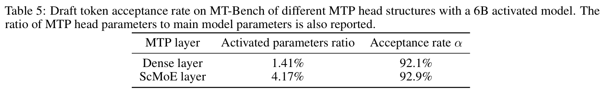
为了平衡性能与效率，LongCat-Flash 的 attention 机制采用具有 64 个头的 MLA，减少 attention 部分的计算负载，同时实现出色的 KV cache 压缩，降低存储和带宽压力。这对编排 LongCat-Flash 的流水线至关重要：如图 9 所示，模型始终存在一部分无法与通信重叠的 attention 计算。具体而言，MLA 吸收方法中的类 MQA 结构，在 m 维度（64 个头）共享 KV，与 WGMMA 指令的形状对齐，实现最大化硬件利用率。
LLM 推理系统的 decoding 阶段可能因内核启动开销而受启动限制。引入 speculative decoding 时，这一问题更严重，尤其是 LongCat-Flash 的轻量 MTP：验证内核与草稿前向传播分别调度，会引入显著开销。为缓解这一问题，我们采用 TVD 融合策略，将目标模型前向传播、验证和草稿前向传播融合为单个 CUDA graph。为进一步提升 GPU 利用率，我们实现了重叠调度器。不过，实验结果表明，由于 LongCat-Flash 前向传播延迟很低，单步预调度策略不足以完全消除调度开销。如图 10 所示，我们引入多步重叠调度器，在一次调度迭代中启动多个前向步骤的内核。该方法有效地将 CPU 调度和同步隐藏在 GPU 前向过程中，确保 GPU 持续工作。
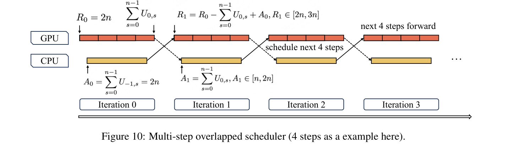
在多步重叠调度器中，我们需要动态地为未来多个步骤预分配 KV cache 槽位，而事先不知道前几次迭代中 speculative decoding 的接受长度。一个重要问题是，多步重叠调度是否会造成 KV cache 分配发散。我们用 \(MTP = 1\)、步数 \(n = 4\) 来说明。令 \(R_{i}\) 表示 GPU 第 \(i\) 次迭代前向传播期间可用的 KV 条目，因此 \(R_{0} = (MTP + 1) \times n = 2n\)。\(U_{i,s} \in [1, 2]\) 表示第 \(i\) 次迭代中第 \(s\) 步的接受长度，初始值为 \(U_{-1,s} = 2\)。于是，当 GPU 正在进行第 \(i\) 次迭代的前向计算时，调度器根据第（\(i - 1\)）次前向迭代的接受长度，预分配第（\(i + 1\)）次前向迭代所需的 KV cache 槽位；\(A_{i}\) 表示分配的 KV cache 槽位数量。形式化表示为：
通过归纳，我们得到闭式表达式：
这意味着：
通过数学归纳，即使不知道当前迭代的接受长度，也能确保下一次迭代的 KV cache 分配安全，同时保证所分配的 KV cache 大小收敛。
LLM 推理的自回归性质带来了独特的效率挑战。Prefill 阶段受计算限制，chunk-prefill [Agrawal et al., 2023] 等方法将数据规整化，以实现最优处理。相比之下，
（本句接原文第 26 页。）
（接原文第 25 页。）
Decoding 阶段常常受内存限制，因为流量模式产生的小而不规则的 batch 会损害内核性能。因此，优化这些特定情况对于最小化 TPOT 至关重要。
MoE GEMM。DeepGEMM [Zhao et al., 2025a] 等现有库将模型权重映射到与 k/n 维度对齐的右侧矩阵（\(A\times B=C\) 中的 B），并将输入激活值作为映射到 m/k 维度的左侧矩阵，其中 m 表示 token 数量。当 token 数量低于 m 的最小 64 元素要求时，这种常规方法需要填充。为解决这一低效问题，我们采用 SwapAB [Dege et al., 2025] 技术，将权重视为左侧矩阵，激活值视为右侧矩阵。利用 n 维度灵活的 8 元素粒度，SwapAB 最大化 tensor core 利用率。
通信内核。如图 9 所示，推理系统利用 NVLink Sharp 的硬件加速广播（multimem.st）和交换机内归约（multimem.ld_reduce），最小化数据移动与 SM 占用。通过使用内联 PTX 汇编，reduce-scatter 和 all-gather 内核实现高效数据传输。这些内核同时支持 GPU 之间均匀和非均匀的 token 分布，在 4KB 至 96MB 消息大小范围内持续优于 NCCL [NVIDIA] 和 MSCCL++ [Shah et al., 2025]，且仅使用 4 个线程块。
LongCat-Flash 采用与 DeepSeek-V3 相同的量化方案，使用细粒度分块量化：激活值按 [1,128] 分块，权重按 [128,128] 分块。此外，为实现最优的性能与准确性权衡，我们基于两种方法实施逐层混合精度量化。第一种方案沿用我们在 FPTQ [Li et al., 2023b] 和 Super-Expert [Su et al., 2025] 中的方法，我们观察到某些线性层（尤其是 Downproj）的输入激活值幅值极大，可达 10⁶。第二种方案逐层计算分块 FP8 量化误差（相对误差和绝对误差），发现某些专家层存在显著量化误差。通过取两种方案的交集，我们显著提高了准确性。
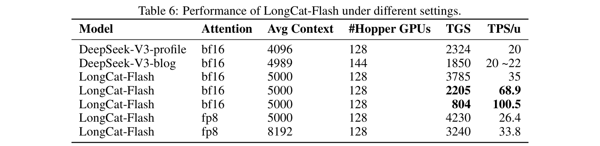
为了支持 prefill 和 decoding 阶段的独立优化，我们采用 PD 分离架构。这一设计的一项关键挑战，是将 KV cache 从 prefill 节点传输到 decoding 节点的开销。为缓解这一问题，我们实施逐层传输，在高 QPS 负载下显著降低 TTFT。Prefill 和 decoding 节点的最小部署单元由 2 个节点组成，共包含 16 张 H800-80GB GPU。同时，使用 DeepEP [Zhao et al., 2025b] 部署宽 EP，以最小化通信开销。此外，我们修改 DeepEP 和 EPLB（EP 负载均衡器），使其支持零计算专家；零计算专家的输出可以无需通信直接获得。
表 6 比较 LongCat-Flash 与 DeepSeek-V3 的吞吐量和延迟，其中 DeepSeek-V3-profile 来自 DeepSeek [2025a]，DeepSeek-V3-blog 来自 DeepSeek [2025b]。TGS（每张 GPU 每秒 token 数）表示每个设备的生成吞吐量（数值越高，成本越低），TPS/u（每个用户每秒 token 数）表示单个用户的生成速度（越高越好）。测试时，使用给定序列长度下的稳态生成吞吐量进行计算。LongCat-Flash 在不同序列长度下均实现了更高的生成吞吐量和更快的生成速度。
在基于 ReACT [Yao et al., 2023] 模式的 agent 应用中，完成单个任务需要多轮模型交互，交互延迟直接影响用户体验。对典型 agent 调用模式的分析表明，模型输出具有不同的速度需求：
针对这一场景，LongCat-Flash 的动作命令生成速度接近 100 token/s。假设一张 H800 GPU 每小时成本为 2 美元，则对应每百万输出 token 价格为 0.7 美元。这一性能将单轮工具调用延迟限制在一秒以内，从而显著增强 agent 应用的交互性。
图 9 表明，LongCat-Flash 的延迟主要由三个部分决定：
假设 EP 数量为 128，DeepSeek-V3 和 LongCat-Flash 的 MLA 使用 DP，而 Qwen3-235B-A22B 因为具有 4 个 KV 头，其 GQA 使用 TP4，且每设备 batch 大小为 96。实际上，Qwen-235B-A22B 的 GQA 特性使 KV cache 的内存占用较高，在实践中很难达到每张 GPU batch 大小为 96。这里假设能够达到该值，仅用于理论分析。如 [Jiashi Li, 2025] 所指出，FlashMLA 在 NVIDIA H800 SXM5 GPU 上可达到 660 TFlops；Zhao et al. [2025b] 指出 DeepEP 带宽可达 40GB/s。我们的计算采用了这两项指标。假设每张 H800 每小时成本为 2 美元。考虑 \(MTP = 1\)、接受率为 80%，即可计算 DeepSeek-V3、Qwen3-235B-A22B 和 LongCat-Flash 单层各模块的理论耗时与成本，如表 7 所示。对于原生不支持 MTP 的 Qwen3-235B-A22B，我们假设使用接受率相近的推测采样策略。
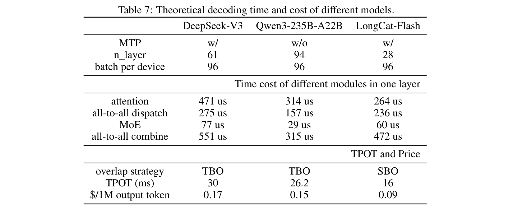
在这一配置下，采用 SBO 的 LongCat-Flash，其理论极限 TPOT 可表示为：
其中，TPL 表示每层耗时。
Batch 大小为 96 时，实测 TPOT 约为 26 ms，约为理论值的 61.5%，与 DeepSeek-V3（约 64%）相当。实测与理论速度之间的差距，主要来自小算子的开销和通信带宽损失。
译注：原文在此将实测“速度／效率约为理论的 61.5%”表述为“实测值约为理论值的 61.5%”；原文数值与措辞保留。
我们使用相同方法，计算 TBO 调度下 DeepSeek-V3 和 Qwen3-235B-A22B 的 TPOT 与生成成本的理论极限。从表 7 可以看出，通过模型与系统协同设计，LongCat-Flash 在吞吐量和延迟两方面均取得显著的理论改进。
此外，我们对 LongCat-Flash 观察到两项关键见解：（1）LongCat-Flash 不仅暴露 all-to-all 通信与 MoE 计算，还暴露一部分 MLA 计算。因此，在相同 batch 大小下，LongCat-Flash 的单层耗时略长于 DeepSeek-V3。不过，由于层数显著减少，LongCat-Flash 的整体延迟更低。（2）LongCat-Flash 的第二个 MLA 与 all-to-all 合并重叠。这意味着在 decoding 阶段，LongCat-Flash 可以在一定范围内增加序列长度，而不显著增加延迟。
我们推出 LongCat-Flash，一个具有 560B 参数的 MoE 模型，包含三项关键创新：（1）具备上下文感知能力的动态计算机制和捷径连接 MoE，使训练与推理均具备高效率；（2）确保稳定大规模训练的综合策略；（3）培养 LongCat-Flash agent 能力的多阶段训练流程，使其能够执行需要迭代推理和环境交互的复杂任务。通过将 LongCat-Flash 作为开源模型发布，我们希望推动高效 MoE 架构、高质量数据策略和 agent 模型开发的研究，促进由社区驱动的 LLM 创新。
作者名单按字母顺序排列。带星号（*）的姓名表示已离开团队的人员。
Bayan
Bei Li
Bingye Lei
Bo Wang
Bolin Rong
Chao Wang
Chao Zhang
Chen Gao
Chen Zhang
Cheng Sun
Chengcheng Han
Chenguang Xi
Chi Zhang
Chong Peng
Chuan Qin
Chuyu Zhang
Cong Chen
Congkui Wang
Dan Ma
Daoru Pan
Defei Bu
Dengchang Zhao
Deyang Kong
Dishan Liu
Feiye Huo
Fengcun Li
Fubao Zhang
Gan Dong
Gang Liu
Gang Xu
Ge Li
Guoqiang Tan
Guoyuan Lin
Haihang Jing
Haomin Fu
Haonan Yan
Haoxing Wen
Haozhe Zhao
Hong Liu
Hongmei Shi*
Hongyan Hao
Hongyin Tang
Huantian Lv
Hui Su
Jiacheng Li
Jiahao Liu
Jiahuan Li
Jiajun Yang
Jiaming Wang
Jian Yang
Jianchao Tan
Jiaqi Sun
Jiaqi Zhang
Jiawei Fu
Jiawei Yang
Jiaxi Hu
Jiayu Qin
Jingang Wang
Jiyuan He
Jun Kuang
Junhui Mei
Kai Liang
Ke He
Kefeng Zhang
Keheng Wang
Keqing He*
Liang Gao
Liang Shi
Lianhui Ma
Lin Qiu
Lingbin Kong
Lingtong Si
Linkun Lyu
Linsen Guo
Liqi Yang
Lizhi Yan
Mai Xia
Man Gao
Manyuan Zhang
Meng Zhou
Mengxia Shen
Mingxiang Tuo
Mingyang Zhu
Peiguang Li
Peng Pei
Peng Zhao
Pengcheng Jia
Pingwei Sun
Qi Gu
Qianyun Li
Qingyuan Li*
Qiong Huang
Qiyuan Duan
Ran Meng
Rongxiang Weng
Ruichen Shao
Rumei Li
Shizhe Wu
Shuai Liang
Shuo Wang
Suogui Dang
Tao Fang
Tao Li
Tefeng Chen
Tianhao Bai
Tianhao Zhou
Tingwen Xie
Wei He
Wei Huang
Wei Liu
Wei Shi
Wei Wang
Wei Wu
Weikang Zhao
Wen Zan
Wenjie Shi
Xi Nan
Xi Su
Xiang Li
Xiang Mei
Xiangyang Ji
Xiangyu Xi
Xiangzhou Huang
Xianpeng Li
Xiao Fu
Xiao Liu
Xiao Wei
Xiaodong Cai
Xiaolong Chen
Xiaoqing Liu
Xiaotong Li
Xiaowei Shi
Xiaoyu Li
Xili Wang
Xin Chen
Xing Hu
Xingyu Miao
Xinyan He
Xuemiao Zhang
Xueyuan Hao
Xuezhi Cao
Xunliang Cai
Xurui Yang
Yan Feng
Yang Bai
Yang Chen
Yang Yang
Yaqi Huo
Yerui Sun
Yifan Lu
Yifan Zhang
Yipeng Zang
Yitao Zhai
Yiyang Li
Yongjing Yin
Yongkang Lv
Yongwei Zhou
Yu Yang
Yuchen Xie
Yueqing Sun
Yuewen Zheng
Yuhua Wei
Yulei Qian
Yunfan Liang
Yunfang Tai
Yunke Zhao
Zeyang Yu
Zhao Zhang
Zhaohua Yang
Zhenchao Zhang
Zhikang Xia
Zhiye Zou
Zhizhao Zeng
Zhongda Su
Zhuofan Chen
Zijian Zhang
Ziwen Wang
Zixu Jiang
Zizhe Zhao
Zongyu Wang
Zunhai Su*
LongCat-Flash
DeepSeek-AI, Aixin Liu, Bei Feng, Bing Xue, Bingxuan Wang, Bochao Wu, Chengda Lu, Chenggang Zhao, Chengqi Deng, Chenyu Zhang, Chong Ruan, 等 DeepSeek-V3 技术报告. arXiv 预印本 arXiv:arXiv 预印本 arXiv:2412.19437, 2025.
An Yang, Anfeng Li, Baosong Yang, Beichen Zhang, Binyuan Hui, Bo Zheng, Bowen Yu, Chang Gao, Chengen Huang, Chenxu Lv, 等 Qwen3 技术报告. arXiv 预印本 arXiv:2505.09388, 2025.
Kimi Team, Yifan Bai, Yiping Bao, Guanduo Chen, Jiahao Chen, Ningxin Chen, Ruijue Chen, Yanru Chen, Yuankun Chen, Yutian Chen, 等 Kimi K2：开放的 agent 智能. arXiv 预印本 arXiv:2507.20534, 2025.
Weilin Cai, Juyong Jiang, Le Qin, Junwei Cui, Sunghun Kim, and Jiayi Huang. 用于加速 MoE 的捷径连接 EP. arXiv 预印本 arXiv:2404.05019, 2024.
Jiaming Wang, Yunke Zhao, Peng Ding, Jun Kuang, Zongyu Wang, Xuezhi Cao, and Xunliang Cai. 提问、失败、重复：Meeseeks，一个用于评估 LLM 多轮指令遵循能力的迭代反馈基准. arXiv 预印本 arXiv:2504.21625, 2025a.
Peng Jin, Bo Zhu, Li Yuan, and Shuicheng Yan. MoE++：通过零计算专家加速 MoE 方法. arXiv 预印本 arXiv:2410.07348, 2024.
Aixin Liu, Bei Feng, Bin Wang, Bingxuan Wang, Bo Liu, Chenggang Zhao, Chengqi Dengr, Chong Ruan, Damai Dai, Daya Guo, 等 DeepSeek-V2：强大、经济且高效的 MoE 语言模型. arXiv 预印本 arXiv:2405.04434, 2024a.
Yaniv Leviathan, Matan Kalman, and Yossi Matias. 通过 speculative decoding 实现 Transformer 的快速推理. In International Conference on Machine Learning, 2023.
Zihao Zeng, Yibo Miao, Hongcheng Gao, Hao Zhang, and Zhijie Deng. AdaMoE：利用空专家实现 MoE 语言模型的 token 自适应路由. In Findings of the Association for Computational Linguistics: EMNLP 2024, 2024.
Lean Wang, Huazuo Gao, Chenggang Zhao, Xu Sun, and Damai Dai. MoE 的无辅助损失负载均衡策略. arXiv 预印本 arXiv:2408.15664, 2024a.
Stuart Bennett. 控制工程史：1930–1955. Peter Peregrinus, GBR, 第 1 版, 1993. ISBN 0863412998.
Samyam Rajbhandari, Conglong Li, Zhewei Yao, Minjia Zhang, Reza Yazdani Aminabadi, Ammar Ahmad Awan, Jeff Rasley, and Yuxiong He. DeepSpeed-MoE：推进 MoE 推理与训练，支撑下一代 AI 规模. In International Conference on Machine Learning, ICML 2022, 17-23 July 2022, Baltimore, Maryland, USA, 2022.
Ashish Vaswani, Noam Shazeer, Niki Parmar, Jakob Uszkoreit, Llion Jones, Aidan N Gomez, Łukasz Kaiser, and Illia Polosukhin. Attention 就是你所需要的一切. 2017.
Joshua Ainslie, James Lee-Thorp, Michiel de Jong, Yury Zemlyanskiy, Federico Lebron, and Sumit Sanghai. GQA：从多头 checkpoint 训练广义多查询 Transformer 模型. In Proceedings of the 2023 Conference on Empirical Methods in Natural Language Processing, 2023.
Yusuxke Shibata, Takuya Kida, Shuichi Fukamachi, Masayuki Takeda, Ayumi Shinohara, Takeshi Shinohara, and Setsuo Arikawa. BPE：加速模式匹配的文本压缩方案. 1999.
Rico Sennrich, Barry Haddow, and Alexandra Birch. 使用子词单元进行罕见词的神经机器翻译. arXiv 预印本 arXiv:1508.07909, 2015.
Fabian Gloeckle, Badr Youbi Idrissi, Baptiste Rozière, David Lopez-Paz, and Gabriel Synnaeve. 通过 MTP 构建更好、更快的 LLM. arXiv 预印本 arXiv:2404.19737, 2024.
Katie Everett, Lechao Xiao, Mitchell Wortsman, Alexander A. Alemi, Roman Novak, Peter J. Liu, Izzeddin Gur, Jascha Sohl-Dickstein, Leslie Pack Kaelbling, Jaehoon Lee, and Jeffrey Pennington. 不同参数化方式与优化器的缩放指数. arXiv 预印本 arXiv:2407.05872, 2024.
Tianqi Chen, Ian Goodfellow, and Jonathon Shlens. Net2Net：通过知识迁移加速学习. arXiv 预印本 arXiv:1511.05641, 2015.
Wenyu Du, Tongxu Luo, Zihan Qiu, Zeyu Huang, Yikang Shen, Reynold Cheng, Yike Guo, and Jie Fu. 堆叠你的 Transformer：深入考察高效 LLM 预训练中的模型增长. arXiv 预印本 arXiv:2405.15319, 2024.
Peihao Wang, Rameswar Panda, Lucas Torroba Hennigen, Philip Greengard, Leonid Karlinsky, Rogerio Feris, David Daniel Cox, Zhangyang Wang, and Yoon Kim. 学习增长预训练模型，以实现高效 Transformer 训练. arXiv 预印本 arXiv:2303.00980, 2023a.
Sheng Shen, Pete Walsh, Kurt Keutzer, Jesse Dodge, Matthew Peters, and Iz Beltagy. Transformer 语言模型的分阶段训练. In International Conference on Machine Learning, 2022.
Yite Wang, Jiahao Su, Hanlin Lu, Cong Xie, Tianyi Liu, Jianbo Yuan, Haibin Lin, Ruoyu Sun, and Hongxia Yang. LEMON：无损模型扩展. arXiv 预印本 arXiv:2310.07999, 2023b.
Linyuan Gong, Di He, Zhuohan Li, Tao Qin, Liwei Wang, and Tieyan Liu. 通过渐进堆叠高效训练 BERT. In Proceedings of the 36th International Conference on Machine Learning, 2019.
Dahyun Kim, Chanjun Park, Sanghoon Kim, Wonsung Lee, Wonho Song, Yunsu Kim, Hyeonwoo Kim, Yungi Kim, Hyeonju Lee, Jihoo Kim, 等 SOLAR 10.7B：通过简单而有效的深度扩展扩大 LLM 规模. arXiv 预印本 arXiv:2312.15166, 2023.
Barret Zoph, Irwan Bello, Sameer Kumar, Nan Du, Yanping Huang, Jeff Dean, Noam Shazeer, and William Fedus. ST-MoE：设计稳定且可迁移的稀疏专家模型. arXiv 预印本 arXiv:2202.08906, 2022.
Mingjie Sun, Xinlei Chen, J. Zico Kolter, and Zhuang Liu. LLM 中的巨大激活值. arXiv 预印本 arXiv:2402.17762, 2024.
Team OLMo, Pete Walsh, Luca Soldaini, Dirk Groeneveld, Kyle Lo, Shane Arora, Akshita Bhagia, Yuling Gu, Shengyi Huang, Matt Jordan, 等 2 OLMo 2 Furious. arXiv 预印本 arXiv:2501.00656, 2024.
Biao Zhang and Rico Sennrich. 均方根层归一化. 2019.
Adrien Barbaresi. Trafilatura：用于文本发现与提取的网页抓取库和命令行工具. In Proceedings of the 59th Annual Meeting of the Association for Computational Linguistics and the 11th International Joint Conference on Natural Language Processing: System Demonstrations, 2021.
Xiangyu Xi, Deyang Kong, Jian Yang, Jiawei Yang, Zhengyu Chen, Wei Wang, Jingang Wang, Xunliang Cai, Shikun Zhang, and Wei Ye. SampleMix：通过协调数据质量与多样性进行逐样本预训练数据混合的策略. arXiv 预印本 arXiv:2503.01506, 2025.
Jianlin Su, Murtadha Ahmed, Yu Lu, Shengfeng Pan, Wen Bo, and Yunfeng Liu. RoFormer：通过 RoPE 增强 Transformer. Neurocomputing, 568:127063, 2024.
Jianlv Chen, Shitao Xiao, Peitian Zhang, Kun Luo, Defu Lian, and Zheng Liu. BGE M3-Embedding：通过自知识蒸馏实现多语言、多功能、多粒度文本 embedding. arXiv 预印本 arXiv:2402.03216, 2024.
Dan Hendrycks, Collin Burns, Steven Basart, Andy Zou, Mantas Mazeika, Dawn Song, and Jacob Steinhardt. 衡量大规模多任务语言理解能力. arXiv 预印本 arXiv:2009.03300, 2021a.
Yubo Wang, Xueguang Ma, Ge Zhang, Yuansheng Ni, Abhranil Chandra, Shiguang Guo, Weiming Ren, Aaran Arulraj, Xuan He, Ziyan Jiang, Tianle Li, Max Ku, Kai Wang, Alex Zhuang, Rongqi Fan, Xiang Yue, and Wenhu Chen. MMLU-Pro：更稳健且更具挑战性的多任务语言理解基准. arXiv 预印本 arXiv:2406.01574, 2024b.
Yuzhen Huang, Yuzhuo Bai, Zhihao Zhu, Junlei Zhang, Jinghan Zhang, Tangjun Su, Junteng Liu, Chuancheng Lv, Yikai Zhang, Jiayi Lei, Yao Fu, Maosong Sun, and Junxian He. C-Eval：面向基础模型的多层次、多学科中文评测套件. In Advances in Neural Information Processing Systems, 2023.
Haonan Li, Yixuan Zhang, Fajri Koto, Yifei Yang, Hai Zhao, Yeyun Gong, Nan Duan, and Timothy Baldwin. CMMLU：衡量中文大规模多任务语言理解能力. arXiv 预印本 arXiv:2306.09212, 2023a.
David Rein, Betty Li Hou, Asa Cooper Stickland, Jackson Petty, Richard Yuanzhe Pang, Julien Dirani, Julian Michael, and Samuel R. Bowman. GPQA：研究生级别、无法轻易通过 Google 搜索解决的问答基准. arXiv 预印本 arXiv:2311.12022, 2023.
M-A-P Team, ByteDance. SuperGPQA：将 LLM 评测扩展到 285 个研究生学科. arXiv 预印本 arXiv:2502.14739, 2025.
Mirac Suzgun, Nathan Scales, Nathanael Schärli, Sebastian Gehrmann, Yi Tay, Hyung Won Chung, Aakanksha Chowdhery, Quoc Le, Ed Chi, Denny Zhou, and Jason Wei. 具有挑战性的 BIG-bench 任务，以及 CoT 能否解决它们. In Findings of the Association for Computational Linguistics: ACL 2023, 2023.
Yonatan Bisk, Rowan Zellers, Ronan Le Bras, Jianfeng Gao, and Yejin Choi. PIQA：用自然语言进行物理常识推理. arXiv 预印本 arXiv:1911.11641, 2019.
Dheeru Dua, Yizhong Wang, Pradeep Dasigi, Gabriel Stanovsky, Sameer Singh, and Matt Gardner. DROP：需要对段落进行离散推理的阅读理解基准. arXiv 预印本 arXiv:1903.00161, 2019.
Liang Xu, Hai Hu, Xuanwei Zhang, Lu Li, Chenjie Cao, Yudong Li, Yechen Xu, Kai Sun, Dian Yu, Cong Yu, Yin Tian, Qianqian Dong, Weitang Liu, Bo Shi, Yiming Cui, Junyi Li, Jun Zeng, Rongzhao Wang, Weijian Xie, Yanting Li, Yina Patterson, Zuoyu Tian, Yiwen Zhang, He Zhou, Shaoweihua Liu, Zhe Zhao, Qipeng Zhao, Cong Yue, Xinrui Zhang, Zhengliang Yang, Kyle Richardson, and Zhenzhong Lan. CLUE：中文语言理解评测基准. In Proceedings of the 28th International Conference on Computational Linguistics, 2020.
Keisuke Sakaguchi, Ronan Le Bras, Chandra Bhagavatula, and Yejin Choi. WinoGrande：大规模对抗性 Winograd Schema 挑战. arXiv 预印本 arXiv:1907.10641, 2019.
Karl Cobbe, Vineet Kosaraju, Mohammad Bavarian, Mark Chen, Heewoo Jun, Lukasz Kaiser, Matthias Plappert, Jerry Tworek, Jacob Hilton, Reiichiro Nakano, Christopher Hesse, and John Schulman. 训练验证器以解决数学应用题. arXiv 预印本 arXiv:2110.14168, 2021.
Dan Hendrycks, Collin Burns, Saurav Kadavath, Akul Arora, Steven Basart, Eric Tang, Dawn Song, and Jacob Steinhardt. 使用 MATH 数据集衡量数学问题求解能力. arXiv 预印本 arXiv:2103.03874, 2021b.
Jiawei Liu, Songrun Xie, Junhao Wang, Yuxiang Wei, Yifeng Ding, and Lingming Zhang. 评估语言模型的高效代码生成能力. arXiv 预印本 arXiv:2408.06450, 2024b.
Federico Cassano, John Gouwar, Daniel Nguyen, Sydney Nguyen, Luna Phipps-Costin, Donald Pinckney, Ming- Ho Yee, Yangtian Zi, Carolyn Jane Anderson, Molly Q Feldman, Arjun Guha, Michael Greenberg, and Abhinav Jangda. MultiPL-E：一种可扩展且可延伸的神经代码生成基准评测方法. arXiv 预印本 arXiv:2208.08227, 2022.
Alex Gu, Baptiste Rozière, Hugh Leather, Armando Solar-Lezama, Gabriel Synnaeve, and Sida I. Wang. CRUXEval：代码推理、理解与执行基准. arXiv 预印本 arXiv:2401.03065, 2024.
Meta AI. Llama 4 系列：原生多模态 AI 创新新时代的开端, 2025. URL https://ai.meta.com/blog/llama-4-multimodal-intelligence/.
MoonshotAI. Kimi-K2 文档, 2025. URL https://moonshotai.github.io/Kimi-K2/.
Mark Chen, Jerry Tworek, Heewoo Jun, Qiming Yuan, Henrique Ponde De Oliveira Pinto, Jared Kaplan, Harri Edwards, Yuri Burda, Nicholas Joseph, Greg Brockman, 等 评估在代码上训练的 LLM. arXiv 预印本 arXiv:2107.03374, 2021.
Loubna Ben Allal, Niklas Muennighoff, Logesh Kumar Umapathi, Ben Lipkin, and Leandro von Werra. 代码生成模型评测框架. https://github.com/bigcode-project/bigcode-evaluation-harness,2022.
Tao Ge, Xin Chan, Xiaoyang Wang, Dian Yu, Haitao Mi, and Dong Yu. 利用 1,000,000,000 个人物画像扩大合成数据创建规模. arXiv 预印本 arXiv:2406.20094, 2024.
Yizhong Wang, Yeganeh Kordi, Swaroop Mishra, Alisa Liu, Noah A Smith, Daniel Khashabi, and Hannaneh Hajishirzi. Self-Instruct：使用自行生成的指令对齐语言模型. arXiv 预印本 arXiv:2212.10560, 2022.
Yuxiang Wei, Federico Cassano, Jiawei Liu, Yifeng Ding, Naman Jain, Zachary Mueller, Harm de Vries, Leandro von Werra, Arjun Guha, and Lingming Zhang. SelfCodeAlign：代码生成的自对齐. In Advances in Neural Information Processing Systems, 2024.
Ziyang Luo, Can Xu, Pu Zhao, Qingfeng Sun, Xiubo Geng, Wenxiang Hu, Chongyang Tao, Jing Ma, Qingwei Lin, and Daxin Jiang. WizardCoder：利用 Evol-Instruct 增强代码 LLM. In The Twelfth International Conference on Learning Representations, ICLR 2024, Vienna, Austria, May 7-11, 2024, 2024.
Jin Jiang, Yuchen Yan, Yang Liu, Jianing Wang, Shuai Peng, Xunliang Cai, Yixin Cao, Mengdi Zhang, and Liangcai Gao. LogicPro：通过程序引导学习改进复杂逻辑推理. In Proceedings of the 63rd Annual Meeting of the Association for Computational Linguistics (Volume 1: Long Papers), 2025.
Chenxu Wang, Ping Jian, and Zhen Yang. 通过面向前提的数据增强进行思维路径对比学习，用于逻辑阅读理解. In AAAI-25, Sponsored by the Association for the Advancement of Artificial Intelligence, February 25 - March 4, 2025, Philadelphia, PA, USA, 2025b.
Junjie Ye, Caishuang Huang, Zhuohan Chen, Wenjie Fu, Chenyuan Yang, Leyi Yang, Yilong Wu, Peng Wang, Meng Zhou, Xiaolong Yang, 等 用于评估和改进 LLM 指令遵循能力的多维约束框架. arXiv 预印本 arXiv:2505.07591, 2025.
Yubo Wang, Xiang Yue, and Wenhu Chen. 批评微调：学习批评比学习模仿更有效. arXiv 预印本 arXiv:2501.17703, 2025c.
Tong Mu, Alec Helyar, Johannes Heidecke, Joshua Achiam, Andrea Vallone, Ian Kivlichan, Molly Lin, Alex Beutel, John Schulman, and Lilian Weng. 面向语言模型安全的基于规则的奖励. In Advances in Neural Information Processing Systems, 2024.
Tianle Li, Wei-Lin Chiang, Evan Frick, Lisa Dunlap, Tianhao Wu, Banghua Zhu, Joseph E Gonzalez, and Ion Stoica. 从众包数据到高质量基准：Arena-Hard 与 BenchBuilder 流程. arXiv 预印本 arXiv:2406.11939, 2024a.
Tianle Li, Wei-Lin Chiang, Evan Frick, Lisa Dunlap, Tianhao Wu, Banghua Zhu, Joseph E Gonzalez, and Ion Stoica. 从实时数据到高质量基准：Arena-Hard 流程, April 2024b. URL https://lmsys.org/blog/2024-04-19-arena-hard/.
Jeffrey Zhou, Tianjian Lu, Swaroop Mishra, Siddhartha Brahma, Sujoy Basu, Yi Luan, Denny Zhou, and Le Hou. LLM 的指令遵循评测. arXiv 预印本 arXiv:2311.07911, 2023.
Shunyu Yao, Howard Chen, Austin W. Hanjie, Runzhe Yang, and Karthik R Narasimhan. COLLIE：系统构建受约束文本生成任务. In The Twelfth International Conference on Learning Representations, 2024.
Hunter Lightman, Vineet Kosaraju, Yuri Burda, Harrison Edwards, Bowen Baker, Teddy Lee, Jan Leike, John Schulman, Ilya Sutskever, and Karl Cobbe. 让我们逐步验证. In The Twelfth International Conference on Learning Representations, 2023.
MAA. AIME 2024, 2024. URL https://maa.org/math-competitions/american-invitational-mathematics-examination-aime.
MAA. AIME 2025, 2025. URL https://artofproblemsolving.com/wiki/index.php/AIME_Problems_and_Solutions.
ByteDance-Seed. BeyondAIME：将数学推理评测推进至高中奥赛之外. https://huggingface.co/datasets/ByteDance-Seed/BeyondAIME,2025.
Bill Yuchen Lin, Ronan Le Bras, Kyle Richardson, Ashish Sabharwal, Radha Poovendran, Peter Clark, and Yejin Choi. ZebraLogic：论 LLM 逻辑推理的规模扩展极限. In Forty-second International Conference on Machine Learning, 2025.
OpenAI. GraphWalks 数据集, 2025a. URL https://huggingface.co/datasets/openai/graphwalks.
Naman Jain, King Han, Alex Gu, Wen-Ding Li, Fanjia Yan, Tianjun Zhang, Sida Wang, Armando Solar-Lezama, Koushik Sen, and Ion Stoica. LiveCodeBench：对 LLM 代码能力进行全面且无污染的评测. In The Thirteenth International Conference on Learning Representations, 2025.
Carlos E Jimenez, John Yang, Alexander Wettig, Shunyu Yao, Kexin Pei, Ofir Press, and Karthik R Narasimhan. SWE-bench：语言模型能解决现实中的 GitHub issue 吗？ In The Twelfth International Conference on Learning Representations, 2024.
The Terminal-Bench Team. Terminal-Bench：终端环境中 AI agent 的基准, Apr 2025a. URL https://github.com/laude-institute/terminal-bench.
Victor Barres, Honghua Dong, Soham Ray, Xujie Si, and Karthik Narasimhan. τ²-bench：在双重控制环境中评估对话 agent. arXiv 预印本 arXiv:2506.07982, 2025.
Chen Chen, Xinlong Hao, Weiwen Liu, Xu Huang, Xingshan Zeng, Shuai Yu, Dexun Li, Shuai Wang, Weinan Gan, Yuefeng Huang, 等 ACEBench：谁赢得工具学习的赛点？ arXiv 预印本 arXiv:2501.12851, 页码 arXiv–2501, 2025.
OpenAI. 在 API 中推出 GPT-4.1, April 2025b. URL https://openai.com/index/gpt-4-1/.
Anthropic. 推出 Claude 4, May 2025. URL https://www.anthropic.com/news/claude-4.
Gheorghe Comanici, Eric Bieber, Mike Schaekermann, Ice Pasupat, Noveen Sachdeva, Inderjit Dhillon, Marcel Blistein, Ori Ram, Dan Zhang, Evan Rosen, 等 Gemini 2.5：通过先进推理、多模态、长上下文和下一代 agent 能力推进前沿. arXiv 预印本 arXiv:2507.06261, 2025.
Author Qi and Others. LLM 的零气泡 PP. arXiv 预印本 arXiv:2301.12345, 2023.
Penghui Qi, Xinyi Wan, Nyamdavaa Amar, and Min Lin. 内存可控的 PP. 2024.
Kan Zhu, Yufei Gao, Yilong Zhao, Liangyu Zhao, Gefei Zuo, Yile Gu, Dedong Xie, Tian Tang, Qinyu Xu, Zihao Ye, Keisuke Kamahori, Chien-Yu Lin, Ziren Wang, Stephanie Wang, Arvind Krishnamurthy, and Baris Kasikci. NanoFlow：迈向最优的 LLM 服务吞吐量. arXiv 预印本 arXiv:2408.12757, 2025.
Yulei Qian, Fengcun Li, Xiangyang Ji, Xiaoyu Zhao, Jianchao Tan, Kefeng Zhang, and Xunliang Cai. EPS-MoE：面向高成本效益 MoE 推理的专家流水线调度器. arXiv 预印本 arXiv:2410.12247, 2025.
The SGLang Team. 在 96 张 H100 GPU 上通过 PD 分离与大规模 EP 部署 DeepSeek. https://lmsys.org/blog/2025-05-05-large-scale-ep/,2025b.访问日期：[May2025].
Jack Choquette. NVIDIA Hopper GPU：扩展性能. In 2022 IEEE Hot Chips 34 Symposium (HCS), 2022.
Ranajoy Sadhukhan, Jian Chen, Zhuoming Chen, Vashisth Tiwari, Ruihang Lai, Jinyuan Shi, Ian En-Hsu Yen, Avner May, Tianqi Chen, and Beidi Chen. MagicDec：利用 speculative decoding 打破长上下文生成的延迟与吞吐量权衡. arXiv 预印本 arXiv:2408.11049, 2025.
Jiahao Liu, Qifan Wang, Jingang Wang, and Xunliang Cai. 通过带 Thompson sampling 控制机制的提前退出 speculative decoding，加速 LLM 推理. arXiv 预印本 arXiv:2406.03853, 2024c.
Feiye Huo, Jianchao Tan, Kefeng Zhang, Xunliang Cai, and Shengli Sun. C2T：speculative decoding 中基于分类器的树构建方法. arXiv 预印本 arXiv:2502.13652, 2025.
Amey Agrawal, Ashish Panwar, Jayashree Mohan, Nipun Kwatra, Bhargav S Gulavani, and Ramachandran Ramjee. Sarathi：将 decoding 搭载于分块 prefill，实现高效 LLM 推理. arXiv 预印本 arXiv:2308.16369, 2023.
Chenggang Zhao, Liang Zhao, Jiashi Li, and Zhean Xu. DeepGEMM：具有细粒度缩放的简洁高效 FP8 GEMM 内核. https://github.com/deepseek-ai/DeepGEMM,2025a.
Pengcuo Dege, Qiuming Luo, Rui Mao, and Chang Kong. FlashMLA-ETAP：用于加速 NVIDIA H20 GPU 上 MLA 推理的高效转置 attention 流水线. arXiv 预印本 arXiv:2506.01969, 2025.
NVIDIA. NVIDIA 集合通信库（NCCL）. https://github.com/NVIDIA/nccl.版本2.21.5.
Aashaka Shah, Abhinav Jangda, Binyang Li, Caio Rocha, Changho Hwang, Jithin Jose, Madan Musuvathi, Olli Saarikivi, Peng Cheng, Qinghua Zhou, Roshan Dathathri, Saeed Maleki, and Ziyue Yang. MSCCL++：为前沿 AI 应用重新思考 GPU 通信抽象. arXiv 预印本 arXiv:2504.09014, 2025.
Qingyuan Li, Yifan Zhang, Liang Li, Peng Yao, Bo Zhang, Xiangxiang Chu, Yerui Sun, Li Du, and Yuchen Xie. FPTQ：LLM 的细粒度 PTQ. arXiv 预印本 arXiv:2308.15987, 2023b.
Zunhai Su, Qingyuan Li, Hao Zhang, YuLei Qian, Yuchen Xie, and Kehong Yuan. 揭示MoELLM中的超级专家. arXiv 预印本 arXiv:2507.23279, 2025.
Chenggang Zhao, Shangyan Zhou, Liyue Zhang, Chengqi Deng, Zhean Xu, Yuxuan Liu, Kuai Yu, Jiashi Li, and Liang Zhao. DeepEP：高效的 EP 通信库. https://github.com/deepseek-ai/DeepEP,2025b.
DeepSeek. DeepSeek 基础设施中的性能分析数据. https://github.com/deepseek-ai/profile-data,2025a.访问日期：[May2025].
DeepSeek. 第 6 天：还有一件事，DeepSeek-V3/R1 推理系统概览. https://github.com/deepseek-ai/open-infra-index/blob/main/202502OpenSourceWeek/day_6_one_more_thing_deepseekV3R1_inference_system_overview.md,2025b.访问日期：[May2025].
Shunyu Yao, Jeffrey Zhao, Dian Yu, Nan Du, Izhak Shafran, Karthik Narasimhan, and Yuan Cao. ReAct：协同语言模型的推理与行动. arXiv 预印本 arXiv:2210.03629, 2023.
Shengyu Liu Jiashi Li. FlashMLA：高效的 MLA decoding 内核. https://github.com/deepseek-ai/FlashMLA,2025.
图 11 展示了 LongCat-Flash 基础模型在不同基准上的平均激活 FFN 专家数量。计算分配呈现一致的偏向：英语 token 比中文和数学 token 获得更多计算资源。我们在表 8 中，通过若干案例展示了不同层更详细的专家
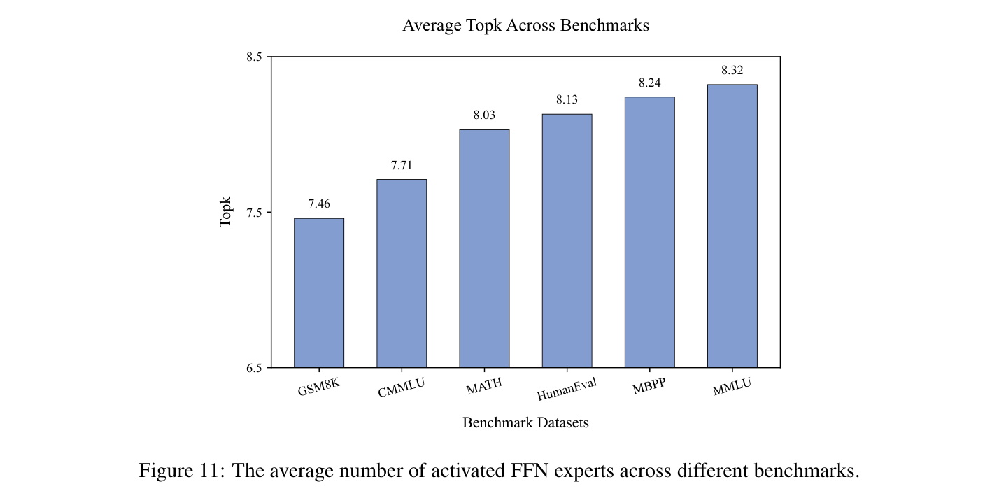
选择情况。这些案例揭示了各层不同的专家选择模式。在第一层，功能词（包括冠词、连词、介词）、数字和标点符号始终获得较少的计算资源。相比之下，最后一层（第 28 层）的特征分配专门化程度低于第 1 层，但仍存在可辨识的模式。例如，在中文文本案例中，标点符号之前的 token 往往被分配较少的计算资源。我们假设，浅层优先根据 token 内部语义进行分配，而深层根据预测复杂度动态调整资源，这可能体现了从局部特征处理到全局预测优化的层次性转变。
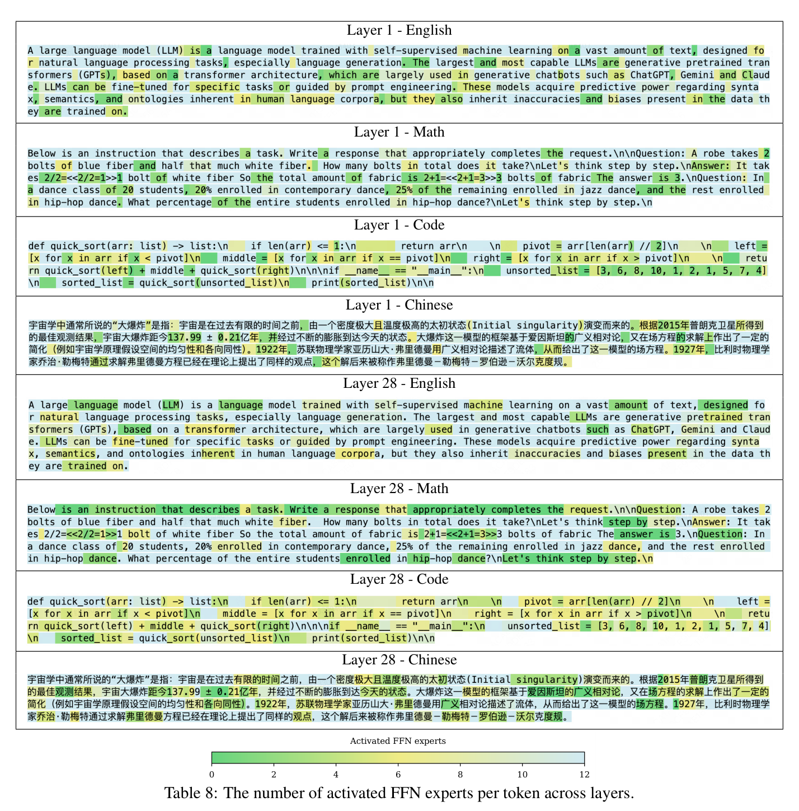